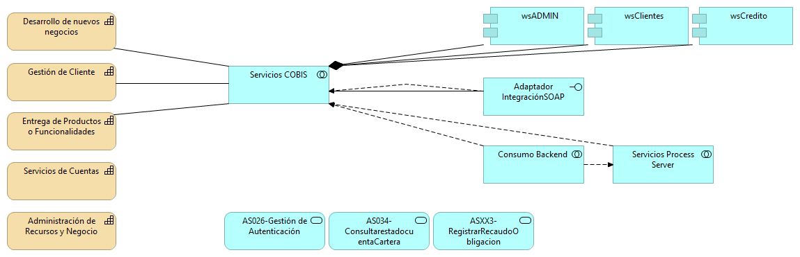
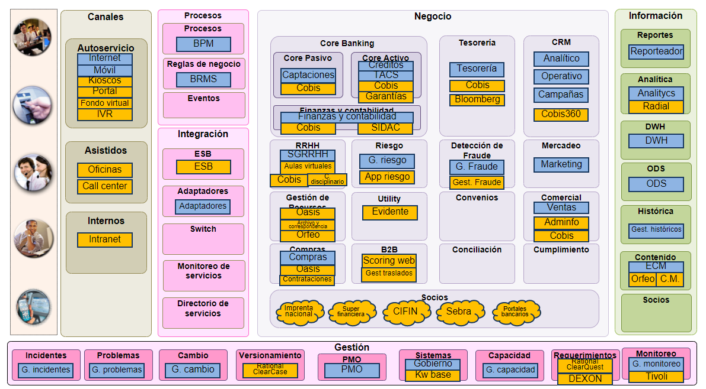
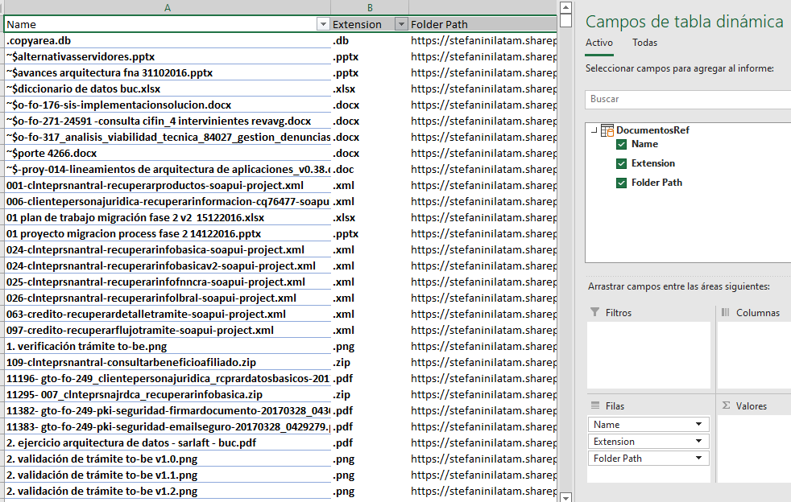

Documentación del proyecto 181-2020, E-Service,
(permalink)
versión indicada a continuación, se encuentra en
e4a06a8
on February 20, 2023.
Grupo E-Service
Harry Wong, ing.
· e_hwong
Arquitecto SOA, Stefanini
Eddie Hernandez, ing.
· e_ehernandez
Datos, Stefanini
Federico Suárez, ing.
· e_fsuarez
Infraestructura, Stefanini
Darío Correal, ing.
· e_dcorreal
Arquitecto TI, Stefanini
Fase 1: Estado SOA Actual
Contenido de los Productos del Alcance
Producto 1: PR1. SOA Actual
Presentar la situación general SOA del Fondo Nacionnal del Ahorro (FNA) al año 2022 - 2023 desde organizada según las vistas de arquitectura. Por tanto, la situación general SOA del Fondo está comprendida por las vistas funcional, la de información, integración y la vista tecnológica actual en donde destacan los sistemas de información (aplicaciones) críticas para el negocio, los servicios SOA y las tecnologías y proveedores que operan en el Fondo.
Justificación
La arquitectura, organizada por vistas, es el medio de trabajo común entre negocio y tecnología. Adicionalmente, provee un vocabulario común y un espacio de análisis sobre las decisiones de arquitectura y su impacto en el negocio. La estructura por vistas, es un estándar de organización de arquitectura y se sugieren las mínimas necesarias para lograr comunicar de forma efectiva las decisiones relevantes que componen la propuesta de servicios actual del Fondo.
Contenidos
Descripción de la vista Funcional Actual
Vista de Contexto: objetivos del diagnóstico SOA, productos, áreas, y procesos FNA objeto del diagnóstico
Vista de Segmento del ejercicio SOA del FNA
Catálogo de servicios (blueprint) seleccionados FNA
Áreas objeto del diagnóstico SOA
Capacidades de negocio FNA relacionadas con servicios SOA
Sistemas de información, aplicaciones y servicios
Tipos de Servicios / Distribución de servicios SOA por tipo
Servicios independientes (FNA debería tener)
Procesos del FNA relacionados con los productos, objetivos, y áreas FNA objeto del diagnóstico SOA
Arquitectura de referencia SOA del FNA
Descripción de la vista de Información actual
Portafolio de aplicaciones y proveedores
Inventario de fuentes de datos
Descripción de la vista de Integración actual
Matriz de intercambio de información crítica del negocio
Entidades de negocio (información y datos) relacionadas en la integración
Conectores y servicios de integración
Inventario de servicios por tipo (negocio, utilitarios, datos… )
Conectores: necesidades de integración de las áreas del FNA objeto del diagnóstico SOA
Interrelación Entre Servicios SOA del FNA
Descripción de la vista Tecnológica actual
Listado tecnológico del inventario de servicios
Presentación del Método para el Análisis de Madurez SOA del FNA
Cuestionarios de los objetivos del análisis
Dimensiones del análisis (OSIMM)
Herramienta de diagnóstico de nivel de madurez SOA
Criterios de Aceptación
Descripción de las vistas funcionales para los dominios de negocio, información, Tecnológica e integración
Análisis y diagnóstico del nivel de madurez SOA
Tema
Vista de Contexto: Objetivos del Diagnóstico SOA y Productos, Áreas, y Procesos FNA Objeto del Diagnóstico
Objetivos del diagnóstico SOA y Productos, Áreas Procesos FNA Objeto del Diagnóstico
La vista de contexto presenta una visión de la empresa ajustada a aquellas partes que entran en el alcance de este proyecto, 181-2020, diagnóstico SOA FNA.
Esta vista informa al Fondo Nacional del Ahorro (FNA, en adelante) dos temas: primero, que el ejercicio actual, aunque utilice una visión empresarial, no puede abarcar a la completitud de la empresa, sino que hace foco en las partes indicadas que son relevantes según las restricciones de ejecución y de resultados esperados del proyecto. Segundo, la vista de contexto comunica las problemáticas (que a la vez son objetivos de solución) a los que le apuntarán los diagnósticos de este proyecto.
Detalles de la Vista de Contexto SOA FNA (181-2020)
Objetivos de la Consultoría: Problemática y Diagnósticos
La consultoría SOA (proyecto 181-2020) tratará tres problemáticas importantes de Fondo Nacional del Ahorro (FNA):
OBJ1. Independencia de proveedor
OBJ2. Flexibilidad y tiempo de mercado
OBJ3. Fortaleza SOA de las aplicaciones del FNA
Nota: Gobierno SOA del FNA lo establecemos como uno de los resultados (un producto de trabajo) que entregaremos al FNA, no como un objeto de la consultoría.
Estos objetivos fueron seleccionados según la relación valor entregado y tiempo de la consultoría, lo cual significa que estos objetivos entregan el nivel de conveniencia de los resultados que puedan desarrollarse en el tiempo de ejecución de este ejercicio.
Estos objetivos también son imporatntes porque sirven a la vez como los objetos de los diagnósticos que realizaremos en este poryecto de consultoría.
Productos del FNA Objetos del Diagnóstico
Esta consultoría considera como entradas para los diagnósticos a los productos de negocio del FNA siguientes:
Cuenta AVC (ahorro voluntario)
Cesantías
Crédito
Cartera
Los demás productos de negocio del FNA serán tratados únicamente cuando su relación con estos los haga relevantes según los requiera o bien un diagnóstico, o bien los objetivos de esta consultoría y del Fondo.
Áreas de Negocio del FNA Objetos del Diagnóstico
Con base a los productos de negocio de la FNA seleccionados, las áreas del FNA que competen a esta consultoría y a los objetivos de los diagnósticos son:
Vicepresidencia de Crédito
Vicepresidencia de Operaciones
La áreas debajo de estas, como por ejemplo, la Gerencia de Crédito Individual para el caso de la primera, o la Gerencia de Cartera, serán relacionadas en tanto se vean impactadas por un diagnóstico en marcha, o los objetivos de este consultoría y del Fondo.
Referencia 1
Procesos de Negocio Objetos del Diagnóstico
Los procesos de negocio seleccionados por este proyecto SOA son aquellos relacionados con los productos de negocio objetos de esta consultoría, por ejemplo,
PROC1. Administración de Cuentas y Pago de Cesantías (CSNT)
La vista de segmento presenta la lista de las partes seleccionadas de la empresa que serán objeto de esta consultoría (proyecto 181-2020) y sobre las que se desarrollarán los procesos de análisis, brecha, hoja de ruta, y demás de esta consultoría. Es una lista filtrada de todas las partes de la empresa, y por tanto, esta vista define el alcance horizontal del diagnóstico SOA.
Partes de la Empresa FNA Objeto del Diagnóstico SOA
Estas partes han sido seleccionadas por tener relación directa con los elementos de la vista de contexto (Ver Vista de Contexto), lo cual significa que estas partes están vinculadas, o bien con alguno de los productos de negocio o con alguno de los procesos de negocio, o con los demás elementos de la vista de contexto.
La "Aplicación Web Gestión Traslado" ha sido seleccionada como parte de la empresa FNA por su relación con el proceso de negocio "Aporte Cesantías". A su vez, el proceso de negocio "Aporte Cesantías" tiene que ver directamente con uno de los cuatro (4) productos de la vista de contexto: Cesantías.
Esto explica porqué la aplicación indicada ha sido seleccionada por el segmento de la empresa FNA objeto del diagnóstico.
Las partes de la empresa que conforman el segmento FNA a diagnosticar.
Nota: si hay partes que hacen faltan en la vista de segmento es debido a que estas carecen de relaciones en los modelos del repositorio de la empresa tal que permitan identificar su grado de cercanía. Para que aparezcan en la vista de segmento es necesario actualizar los modelos de la empresa, como por ejemplo, los modelos de negocio, procesos, servicios, aplicaciones e infraestructura.
Descripción de la Vista Funcional (arquitectura de referencia)
La vista funcional presenta los servicios que deben hacer parte del portafolio de servicios SOA del Fondo, por tanto, funciona a la vez como una arquitectura de referencia a la que hay que fortalecer, comparar y desarrollar y vigilar.
Imagen. Vista funcional basada en mapa de servicios.
Fuente: elaboración propia.
La vista funcional es importante porque presenta los servicios SOA independientes de la tecnología y de proveedor que soportan a las áreas del FNA objeto de este diagnóstico. Por esta razón, esta vista sirve también como instrumento para controlar la alineación del portafolio de servicios con las áreas de negocio de la empresa FNA objeto de este diagnóstico. Con la vista funcional SOA podremos más adelante soportar a las áreas y a los requerimientos claves del FNA.
Resaltamos que a partir de esta vista es necesario establecer las relaciones internas de esta arquitectura de referencia con las partes de la empresa que hacen parte de la vista de segmento (ver N003a Vista Segmento SOA FNA), que es una colección de las partes clave de la empresa y que a la vez son relevantes para este diagnóstico.
Una vez mostramos las capacidades SOA que soportan a las áreas de negocio objeto de este diagnóstico, el ejercicio siguiente es listar los conectores necesarios para articular estas capacidades. Esta vista debemos intersectarla con la vista de segmento de la empresa (01a2.Vista Segmento SOA FNA) para desarrollar las partes del FNA con la que vamos a dar cumplimiento a esta arquitectura de referencia.
Conectores de las Capacidades (arquitectura de referencia)
Los conectores que dinamizan la interacción entre los servicios independientes de la tecnología y de proveedor aparecen en la vista como líneas de conexión entre las capacidades de esta arquitectura de referencia.
Describimos las características de estos conectores con los siguientes ejemplos.
Imagen. Conectores que dinamizan la interacción entre los servicios independientes.
Fuente: elaboración propia.
Importante. Los modelos del FNA carecen de información de los conectores entre las capacidades de negocio del FNA. Esto impacta la manera cómo una capacidad soporta a otra, a la vez que dificulta controlar las tecnologías y estándares involucradas en tales conexiones.
Tema
Catálogo de Servicios SOA: Servicios SOA relevantes al diagnóstico
No hay capacidades de negocio FNA en los modelos de la empresa, pero en la documentación del repositorio hay información sustituta con la que hacemos una propuesta de la vista de las capacidades FNA. Esta vista preliminar sirve para relacionar las capacidades preliminares con los servicios SOA de la empresa y con los demás elementos de la vista de segmento.
Capacidades de negocio encontradas:
Desarrollo de nuevos negocios
Gestión de Cliente
Administración de Recursos y Negocio
Entrega de Productos
Servicios de Cuentas
Gestión Financiera
Fuente: Portafolio de Aplicaciones FNA.
Importancia de las Capacidades y Servicios SOA (y otras partes de la empresa)
La intersección de la vista de segmento del FNA con las capacidades de negocio propuestas por este ejercicio (en color naranja abajo) resultará en la lista de servicios de negocio más importantes para la empresa dado su nivel de relación con estas capacidades.
Por lo anterior, los servicios SOA del FNA más relevantes según los modelos son los indicados a continuación. De igual manera que para el Fondo, estas partes de la empresa son importantes para futuros diagnósticos y gobierno SOA.
Parte FNA
Parte Relacionada
Tipo
Desarrollo de nuevos negocios
AS026-Gestión de Autenticación
application-service
AS034-ConsultarestadocuentaCartera
application-service
ASXX3-RegistrarRecaudoObligacion
application-service
COBIS
application-component
Servicios COBIS
application-collaboration
Entrega de Productos
AS026-Gestión de Autenticación
application-service
AS034-ConsultarestadocuentaCartera
application-service
ASXX3-RegistrarRecaudoObligacion
application-service
COBIS
application-component
Servicios COBIS
application-collaboration
Gestión de Cliente
AS026-Gestión de Autenticación
application-service
AS034-ConsultarestadocuentaCartera
application-service
ASXX3-RegistrarRecaudoObligacion
application-service
COBIS
application-component
Servicios COBIS
application-collaboration
Servicios de Cuentas
AS026-Gestión de Autenticación
application-service
AS034-ConsultarestadocuentaCartera
application-service
ASXX3-RegistrarRecaudoObligacion
application-service
COBIS
application-component
Fuente: arquitectura fna.archimate
Las capacidades de mayor importancia para el FNA debido a su nivel superior de relación con las partes relevantes de la empresa son los siguientes
Nombre Origen
Destino
Relevancia
Desarrollo de nuevos negocios
COBIS
96
Desarrollo de nuevos negocios
AS026-Gestión de Autenticación
8
Desarrollo de nuevos negocios
AS034-ConsultarestadocuentaCartera
6
Desarrollo de nuevos negocios
ASXX3-RegistrarRecaudoObligacion
5
Desarrollo de nuevos negocios
Servicios COBIS
13
Total Desarrollo de nuevos negocios
128
Entrega de Productos
COBIS
96
Entrega de Productos
AS026-Gestión de Autenticación
8
Entrega de Productos
AS034-ConsultarestadocuentaCartera
6
Entrega de Productos
ASXX3-RegistrarRecaudoObligacion
5
Entrega de Productos
Servicios COBIS
13
Total Entrega de Productos
128
Gestión de Cliente
COBIS
96
Gestión de Cliente
AS026-Gestión de Autenticación
8
Gestión de Cliente
AS034-ConsultarestadocuentaCartera
6
Gestión de Cliente
ASXX3-RegistrarRecaudoObligacion
5
Gestión de Cliente
Servicios COBIS
13
Total Gestión de Cliente
128
Servicios de Cuentas
COBIS
96
Servicios de Cuentas
AS026-Gestión de Autenticación
8
Servicios de Cuentas
AS034-ConsultarestadocuentaCartera
6
Servicios de Cuentas
ASXX3-RegistrarRecaudoObligacion
5
Total Servicios de Cuentas
115
Fuente: arquitectura fna.archimate
Areas de Negocio FNA
Tema
Catálogo de Servicios SOA: Relación de Áreas de Negocio FNA y Servicios SOA
En los modelos analizados (Anexo 2) no se evidencia relación de las áreas de negocio del FNA con otros elementos de la vista de segmento. Los modelos actuales no registran la relación de las áreas con los procesos de negocio (misionales, estratégicos o de soporte, ni con los seleccionados para el diagnóstico), aplicaciones ni con servicios SOA.
Importante: si falta esta relación en los modelos, no hay forma de conocer ni gestionar la demanda de los servicios SOA del Fondo, y si estos responde a necesidades de negocio, o de operación, o de tecnología, o de alguna otra área o proceso.
La única relación encontrada es la de algunas áreas de negocio del FNA con el proceso de Legalización.
Las áreas de negocio que sí están modeladas (Anexo 1) no son representativas. Razón por la cual no tienen relación con los elementos relevantes de la empresa ni de este diagnóstico.
Anexo 1. Áreas FNA Modeladas
Name
Type
1. Cargue de insumo
business-function
10. Toma de Firmas Notariales
business-function
11. Validar estado Documental para Desembolso
business-function
12. Seguimiento de Registro
business-function
13. Consolidar carpeta Legal
business-function
2. Consulta de Documento
business-function
3. Estudio Preliminar Títulos
business-function
4. Análisis Previo - Análisis de capacidad de pagos
business-function
5. Consecución de Documentos
business-function
6. Recibir documentos
business-function
7. Avalúo Comercial
business-function
8. Estudio de Títulos – Imprimible
business-function
9. Elaboración de Minuta y Reparto Notarial
business-function
Aplicacion de Negocio
business-function
Aplicacion de Negocio (copy)
business-function
Business Function
business-function
FN1. Vicepresidencia de Crédito
business-function
FN2. Vicepresidencia de Operaciones.
business-function
Otras Áreas FNA
business-function
Servicio de Negocio
business-function
Servicio de Negocio (copy)
business-function
Versión Aplicación
business-function
Versión Aplicación (copy)
business-function
Versiones Del Servicio
business-function
Versiones Del Servicio
business-function
Anexo 2. Modelos Analizados
2015-06-01 modelo arquitectura togaf - fna banca digital v6.archimate
Catálogo de Servicios: Sistemas de información, Aplicaciones y Servicios
Palabras clave
SOA, Servicios, Sistemas, Aplicaciones, Dependencia, Niveles de uso
Autor
Fuente
Version
e4a06a8 del 20 Feb 2023
Vínculos
Servicios SOA y Aplicaciones Proveedoras/Consumidoras
Las aplicaciones proveedoras de servicios SOA más significativas, según la cantidad de servicios provistos, son las primeras cinco (5) de la lista siguiente, y son también las aplicaciones que deben entrar a consideración del gobierno de aplicaciones y del gobierno SOA del Fondo.
En el Anexo 1 está el detalle de los servicios relacionados con la aplicación Cobis-Clientes que tomamos como ejemplo.
Atención
Las siguientes servicios no tienen catalogada una aplicación proveedora, y por tanto, pueden ser ignoradas por las acciones de gestión o evolución que los requieran.
Servicios y Aplicaciones del FNA con Mayor Grado de Dependencia (potencial impacto)
El nivel de relación de dependencia de las aplicaciones con los servicios FNA da cuentas del esfuerzo de mantenimiento al momento de hacerles a estas cambios correctivos o evolutivos. La alta dependencia también tiene implicaciones en la flexibilidad al momento de dar una respuesta mediante los servicios SOA a las aplicaciones o procesos que los usan.
Componente o Aplicación
Dependencia Servicios
Cobis
78
COBIS - Clientes
30
ProxyBizagi
29
COBIS - Crédito
29
Aplicación Ext - Banlínea
20
Aplicación Back - Bizagi Engine
20
Aplicación Web - Scoring
12
SafeNet BSIDCA
11
WM_APIv2
10
…
Total general
328
Tabla. Nivel de dependencia aplicaciones del FNA a de servicios SOA.
Nota. Las aplicaciones y los servicios SOA implicados en los niveles de dependencia superiores a 10 relaciones deben ser sujeto de gobierno SOA.
Servicios del Portafolio con Mayor Grado de Uso (potencial impacto)
Los servicios SOA objeto de esta consultoría del portafolio SOA del Fondo que acumularn la mayor referencias de aplicaciones FNA, y por tanto, son causa de dependencia, son los marcados en el extracto siguiente. Para hacer foco en lo importante, la lista contiene únicamente servicios con más de 5 relaciones de uso (están siendo usados por otro sistema).
Los servicios SOA con mayor cantidad de relaciones (tienen o causan dependencia) organizados por aplicacioón proveedora.
Diagrama de Interdependencias del Portafolio FNA (niveles de acoplamiento)
El diagrama muestra la misma información que la tabla de dependencias del portfolio del FNA aunque expone mejor las interrelaciones entre servicios SOA pertenecesintes a las tres (3) aplicaciones citadas en el diagnóstico: Cobis, ESB y Process Server. También se puede apreciar mejor el peso tiene el concepto de las dependencias para el Fondo. Las áreas con mayor concentración de dependencias son aquellas que acumulan más líneas salientes.
(arriba, izq.) Grupo de aplicaciones pertenecientes a Cobis. (centro, izq.) Grupo de aplicaciones que pertenecen al Process Server del Fondo. (abajo, izq.) El grupo de aplicaciones ESB IBM de la empresa.
No hay información para determinar el rol de cada relación entre los grupos de servicios: servicios de Cobis, servicios de Process Server y servicios del ESB. Esto es importante porque no conocemos si los servicios del bus son intermediarios, orquestadores o controladores: si por cada servicio SOA el bus replica estos, las replicas tendría el rol de intermediario; en cambio, si el bus organiza o secuencia a los otros servicios, estos servicios organizadores tendrían el rol de orquestador.
Anexo 1. Servicios Relacionados con (aplicación) Cobis-Clientes
Los 39 servicios SOA asociados con la aplicación Cobis-Clientes son los siguientes.
Servicio
Aplicación/proveedor
Seguridad_ValidarIdentidadBiometria
Cobis-Clientes
ClntePrsnaJrdca_RecuperarInfoRapidaPJ
Cobis-Clientes
ClntePrsnaNtral_RecuperarInfoBasica_V2
Cobis-Clientes
ClntePrsnaJrdca_CreacionRapidaPJ
Cobis-Clientes
ClntePrsnaNtral_CreacionRapidaPN
Cobis-Clientes
ClntePrsnaNtral_RecuperarNumerosProducto
Cobis-Clientes
ClntePrsnaJrdca_RecuperarInfoFinancieraV2
Cobis-Clientes
ClntePrsnaJrdca_RecuperarInfoLegalV2
Cobis-Clientes
ClntePrsnaJrdca_RecuperarInfoBasicaV2
Cobis-Clientes
ClntePrsnaJrdca_ModificarCasillaPostal
Cobis-Clientes
ClntePrsnaJrdca_ModificarReferencias
Cobis-Clientes
ClntePrsnaJrdca_ModificarInfoLegal
Cobis-Clientes
ClntePrsnaJrdca_ModificarInfoBasica
Cobis-Clientes
ClntePrsnaJrdca_CnsltrIfoCnsld
Cobis-Clientes
ClntePrsnaNtral_MdfcarCsllPstl
Cobis-Clientes
ClntePrsnaNtral_MdfcarInfoLbral
Cobis-Clientes
ClntePrsnaNtral_MdfcarInfoFmliar
Cobis-Clientes
ClntePrsnaNtral_MdfcarInfoBsca
Cobis-Clientes
Participante_GenerarOperacionRios
Cobis-Clientes
Participante_CrearOperacionRios
Cobis-Clientes
ClntePrsnaNtral_GestionarCredenciales
Cobis-Clientes
ClntePrsnaJrdca_MdfcarInfo
Cobis-Clientes
ClntePrsnaJrdca_MdfcarInfo
Cobis-Clientes
ClntePrsnaNtral_Crear
Cobis-Clientes
ClntePrsnaNtral_Crear
Cobis-Clientes
ClntePrsnaJrdca_Crear
Cobis-Clientes
ClntePrsnaJrdca_Crear
Cobis-Clientes
ClntePrsnaNtral_RcprarInfoLbral
Cobis-Clientes
ClntePrsnaNtral_RcprarInfoLbral
Cobis-Clientes
ClntePrsnaNtral_RcprarInfoFnncra
Cobis-Clientes
ClntePrsnaNtral_RcprarInfoFnncra
Cobis-Clientes
ClientePersonaNatural_RecuperarInformacion
Cobis-Clientes
ClientePersonaNatural_RecuperarInformacion
Cobis-Clientes
ClientePersonaJuridica_RecuperarInformacionLegal
Cobis-Clientes
ClientePersonaJuridica_RecuperarDatosFinancieros
Cobis-Clientes
ClientePersonaJuridica_RcprarDatosBasicos
Cobis-Clientes
ClientePersonaJuridica_RecuperarInformacion
Cobis-Clientes
Cliente_ValidarExistencia
Cobis-Clientes
ClntePrsnaNtral_RecuperarProductos
Cobis-Clientes
Tema
Catálogo de Servicios: Tipos de Servicios y Distribución de Servicios SOA por Tipo
Palabras clave
SOA, Servicios, Distribución de servicios
Autor
Fuente
Version
e4a06a8 del 20 Feb 2023
Vínculos
Catalogación de los Tipos de Servicios del Portafolio SOA, FNA
De la clasificación de servicios que dimos en la vista de contexto (servicios de información, proceso y negocio), y filtrando los servicios únicamente a los objeto de esta consultoría (vista de segmento), tenemos que la mayor cantidad de servicios del portafolio son de información.
La tabla siguiente muestra la población de servicios del portafolio FNA.
Tipo Servicio
Cantidad
Servicio Información
55
Servicio Proceso
18
Servicio Negocio
14
Total general
87
Tabla. Catalogación de los tipos de servicios SOA del FNA.
Lo anterior responde a que la mayor cantidad de servicios SOA que son relevantes para el Fondo sirven para transportar información, esto es, para responder a solicitudes de información de los procesos o aplicaciones. Así mismo, este grupo influye en la cantidad de esfuerzo en mantenimiento y gobierno SOA. Los servicios de negocio, aquellos que elaboran una respuesta mediante un cómputo (sea cálculo, diferencia, comparación...), y por tanto, inciden en la flexibilidad de negocio, son los de menor presencia en el portafolio FNA.
Es importante tener esta población presente porque puede estar influyendo en inclinar los esfuerzos hacia el mantenimiento de servicios de información, en lugar de a la velocidad de salida (tiempo de mercado) de las funcionalidades de negocio.
Lista de Detalle de los Servicios de Proceso
Presentamos a continuación el detalle de una de las catalogaciones presentadas en la tabla anterior: los servicios de proceso.
Catálogo de Servicios: Procesos del FNA relacionados con los productos, objetivos, y áreas FNA objeto del diagnóstico SOA
Palabras clave
SOA, Servicios, Procesos
Autor
Fuente
Version
e4a06a8 del 20 Feb 2023
Vínculos
Procesos del FNA relacionados con Servicios del FNA Objeto del Diagnóstico SOA
A falta de información directa respecto de la relación de los procesos de negocio con los servicios, hacemos la propuesta mediante la relación de procesos y aplicaciones, misma que sirve para inferir los servicios que están soportando a dichos procesos. La vista siguiente muestra que falta la relación entre los procesos de negocio y los servicios hasta una profundidad de nivel 3. Vista de relación entre los procesos misionales del FNA y las aplicaciones que los soportan (los modelos no contienen la relación directa entre procesos y servicios SOA). Lo que muestra la vista puede responder a una realidad probable en la que no hay relación explícita entre los procesos de negocio y los servicios, y que por tanto, el Fondo tiene únicamente categorías de servicios utilitarios más que de procesos, o que los modelos simplemente no contienen estas relaciones.
La relación entre procesos y aplicaciones del Fondo siguiente nos da la pauta de que los que agrupan la mayor cantidad de servicios (aplicaciones) son el proceso de Facturación y Cartera (23 relaciones a aplicaciones), el proceso de Gestión de Crédito (19 relaciones a aplicaciones) y el de Gestión Comercial (19 relaciones a aplicaciones). Abajo visualizamos las relaciones de uno de los procesos para conocer la aplicaiones del FNA con las que este tiene relación.
Proceso
Relaciones
Facturación y Cartera
23
Gestión de Crédito
19
(en blanco)
19
Gestión Comercial
9
Cesantías
5
Comunicación
3
Gestión Jurídica
3
Contrataciones
3
Gestión Administrativa
3
Gestion Comercial
3
Mercadeo
2
Aporte de Cesantías
2
Gestión Comercial, Comunicación
1
Gestion Humana
1
Captación de Ahorro Voluntario
1
Total general
97
Tabla. Procesos del FNA con mayor cantidad de relaciones a aplicaciones.
Fuente: InventarioAplicacionesFNA.xlsx
Para ejemplificar las relaciones de los procesos con las aplicaciones, tomaremos el proceso Facturación y Cartera para listar las aplicaciones implicadas con este.
Proceso
Aplicación
Canal
Facturación y Cartera
Abogados Externos
Internet
Facturación y Cartera
Adminfo cobranza
Oficina
Facturación y Cartera
Adminfo crédito
Oficina
Facturación y Cartera
Aplicación ASOCAJAS
Externo
Facturación y Cartera
Aplicación Banco de Bogotá
Externo
Facturación y Cartera
Aplicación Banco de Occidente
Externo
Facturación y Cartera
Aplicación Banco Sudameris
Externo
Facturación y Cartera
Aplicación Bancolombia
Externo
Facturación y Cartera
Aplicación Cadena
Oficina
Facturación y Cartera
Aplicación Colpatria
Externo
Facturación y Cartera
Aplicación Davivienda
Externo
Facturación y Cartera
Aplicación Helm
Externo
Facturación y Cartera
Aplicación Operador Aportes En Línea
Externo
Facturación y Cartera
Aplicación Operador Asopagos
Externo
Facturación y Cartera
Aplicación Operador Enlace Operativo
Externo
Facturación y Cartera
Aplicación Operador Mi Planilla
Externo
Facturación y Cartera
Aplicación Operador Simple
Externo
Facturación y Cartera
Aplicación Operador SOI
Externo
Facturación y Cartera
Aplicación SuRed
Externo
Facturación y Cartera
COBIS Cartera
Oficina
Facturación y Cartera
COBIS Garantías
Oficina
Facturación y Cartera
Contingencia Banco de la Republica
Oficina
Facturación y Cartera
Ecollect/Avisor/PSE
Internet
Tabla. Relaciones del proceso Facturación y Cartera del FNA.
Fuente: InventarioAplicacionesFNA.xlsx
Atención
Las siguientes aplicaciones del Fondo no tienen relación con procesos, aparecen “en blanco” en la tabla anterior y en el modelo analizado: InventarioAplicacionesFNA.xlsx.
Aplicación
Proceso
IDM
Sin proceso
FINAC
Sin proceso
GoAnyWhere
Sin proceso
ERP SAP
Sin proceso
ASOCAJAS
Sin proceso
WorkManager
Sin proceso
Banlinea
Sin proceso
Autenticación IVR
Sin proceso
OASIS
Sin proceso
GHumana
Sin proceso
Fondo En Linea Personas
Sin proceso
Fondo En Linea Empresarial
Sin proceso
COBIS REC
Sin proceso
COBIS Admin Referencias
Sin proceso
COBIS VisualBatch
Sin proceso
COBIS Contabilidad
Sin proceso
COBIS Presupuesto
Sin proceso
COBIS Admin Seguridad
Sin proceso
Mi vivienda en linea / Vitrina virtual
Sin proceso
Tabla. Apliaciones del FNA sin relaciones con procesos.
Fuente: InventarioAplicacionesFNA.xlsx
Tema
Descripción de la vista de integración actual: Matriz de intercambio de información crítica del negocio
La vista funcional actual tiene como objetivo identificar el estado actual de los diferentes artefactos y la relación entre estos. Como lo son, los catálogos de entidades de datos y bases de datos; las matrices que permiten identificar las relaciones entre catálogos y los diagramas que ilustran las relaciones antes mencionadas.
Marcos de Referencia
La arquitectura se construye teniendo en cuenta una serie de marcos de referencia como DAMA, el Marco de Referencia de Arquitectura Empresarial para el Estado Colombiano V2.0, TOGAF, entre otros. Estos marcos de referencia ayudan a la tener criterios para realizar un diagnóstico inicial, un nivel de madurez y la posterior construcción de un plan a futuro que debe ser implementado y que se guía por una hoja de ruta de iniciativas.
La Ilustración a continuación, muestra los marcos de referencia aplicables a la vista de Información:
Ilustracion 1. Marcos de referencia vista de Información
Lista de Aplicaciones
A continuación, se listan las diferentes aplicaciones que hacen parte del ecosistema de integración de servicios del FNA:
Las entidades son una encapsulación de datos que describen un objeto de relevancia para la operación del FNA. Las entidades de datos o información se pueden vincular a aplicaciones, repositorios y servicios que se pueden estructurar de acuerdo con las consideraciones de implementación específicas de sistemas y soluciones.
Para el alcance de la vista de información, se tuvo como fuente de información el modelamiento a nivel lógico, para identificar entidades de información a nivel conceptual de los archivos de la herramienta de modelamiento.
La tabla a continuación, muestra las entidades de datos identificadas y el número de servicios con los que tienen relación:
Entidades
Cantidad de servicios
Credito
50
Cesantias
45
CuentaAVC
30
ClientePN
23
Seguridad
17
Cartera
16
ClientePJ
14
GestorDocumental
14
Tesoreria
8
PQYR
6
Administrador
4
Clientes
3
Garantias
2
Tabla 3 Entidades de Datos
Inventario de fuentes de datos (BD)
A continuación, se listan las fuentes de información que son usadas para ingestar o carga cargar datos desde o hacia el ecosistema de integración del FNA:
NOMBRE
RESPONSABLE
FNABOGPROD1
SAP Adaptive Server Platform 16.0 SP03 PL06
SERVICIO BASE DE DATOS : Grupo Base de Datos FNA
SISTEMA OPERATIVO: Proveedor encargado - Infraestructura
FNABOGFLASH
SAP Adaptive Server Platform 16.0 SP03 PL06
SERVICIO BASE DE DATOS : Grupo Base de Datos FNA
SISTEMA OPERATIVO: Proveedor encargado - Infraestructura
FNABOGIQPRO1
SAP ASE Platform Edition Plataforma 16 SP11
SAP IQ nodo1
SERVICIO BASE DE DATOS : Grupo Base de Datos FNA
SISTEMA OPERATIVO: Proveedor encargado - Infraestructura
FNABOGIQPRO2
SAP ASE Platform Edition Plataforma 16 SP11
SAP IQ nodo2
SERVICIO BASE DE DATOS : Grupo Base de Datos FNA
SISTEMA OPERATIVO: Proveedor encargado - Infraestructura
FNABOGIQPRO
CAPE
SERVICIO BASE DE DATOS : Grupo Base de Datos FNA
SISTEMA OPERATIVO: Proveedor encargado - Infraestructura
FNABOGPROD1
CAPE
SERVICIO BASE DE DATOS : Grupo Base de Datos FNA
SISTEMA OPERATIVO: Proveedor encargado - Infraestructura
FNABOGRSPRO
SAP ASE Platform Edition Plataforma 16 SP11
SAP IQ
SERVICIO BASE DE DATOS : Proveedor Encargado - Infraestructura
SISTEMA OPERATIVO: Proveedor encargado - Infraestructura
fna-hanabipro
SAP HANA Enterprise Edition Plataforma 1.0 SP12
SERVICIO BASE DE DATOS : Proveedor Encargado - Infraestructura
SISTEMA OPERATIVO: Proveedor encargado - Infraestructura
FNABOGPREP1
SAP Adaptive Server Platform 16.0 SP03 PL06
SERVICIO BASE DE DATOS : Proveedor Encargado - Infraestructura
SISTEMA OPERATIVO: Proveedor encargado - Infraestructura
JUPASCANG05BEG01
SAP Adaptive Server Platform 16.0 SP03 PL06
SERVICIO BASE DE DATOS : Proveedor Encargado - Infraestructura
SISTEMA OPERATIVO: Proveedor encargado - Infraestructura
FNABOGPREP1_TSM
SAP Adaptive Server Platform 16.0 SP03 PL06
SERVICIO BASE DE DATOS : Proveedor Encargado - Infraestructura
SISTEMA OPERATIVO: Proveedor encargado - Infraestructura
FNABOGPRUE
SAP Adaptive Server Platform 16.0 SP03 PL06
SERVICIO BASE DE DATOS : Proveedor Encargado - Infraestructura
SISTEMA OPERATIVO: Proveedor encargado - Infraestructura
FNABOGIQPRE
SAP ASE Platform Edition Plataforma 16 SP11
SAP IQ
SERVICIO BASE DE DATOS : Proveedor Encargado - Infraestructura
SISTEMA OPERATIVO: Proveedor encargado - Infraestructura
FNABOGRSPRU
SAP ASE Platform Edition Plataforma 16 SP11
SAP IQ
SERVICIO BASE DE DATOS : Proveedor Encargado - Infraestructura
SISTEMA OPERATIVO: Proveedor encargado - Infraestructura
fna-hanabiqa
SAP HANA Enterprise Edition Plataforma 1.0 SP12
SERVICIO BASE DE DATOS : Proveedor Encargado - Infraestructura
SISTEMA OPERATIVO: Proveedor encargado - Infraestructura
FNABOGAPP008
SAP Data Services 4.2
SERVICIO BASE DE DATOS : Proveedor Encargado - Infraestructura
SISTEMA OPERATIVO: Proveedor encargado - Infraestructura
FNABOGPAPP005
SAP Data Services 4.2
SERVICIO BASE DE DATOS : Proveedor Encargado - Infraestructura
SISTEMA OPERATIVO: Proveedor encargado - Infraestructura
FNABOGBOPRO
SAP Business Objects Enterprise Premiun 4.2
SERVICIO BASE DE DATOS : Proveedor Encargado - Infraestructura
SISTEMA OPERATIVO: Proveedor encargado - Infraestructura
FNABOGPBO
SAP Business Objects Enterprise Premiun 4.2
SERVICIO BASE DE DATOS : Proveedor Encargado - Infraestructura
SISTEMA OPERATIVO: Proveedor encargado - Infraestructura
BOGPVPPWP018
Oracle Database 11g Release 11.2.0.4.0
SERVICIO BASE DE DATOS : Proveedor Encargado - Infraestructura
SISTEMA OPERATIVO: Proveedor encargado - Infraestructura
FNABOGBDOR01
Oracle Database 11g Release 11.2.0.4.0
SERVICIO BASE DE DATOS : Proveedor Encargado - Infraestructura
SISTEMA OPERATIVO: Proveedor encargado - Infraestructura
FNABOGGIT-01
Oracle Database 12c Standard Edition Release 12.1.0.2.0 - 64bit Production
SERVICIO BASE DE DATOS : Proveedor Encargado - Infraestructura
SISTEMA OPERATIVO: Proveedor encargado - Infraestructura
BOGPVPPWP023 \FVIRTUALCL2008
SQL SERVER 2008 Microsoft SQL Server Enterprise Edition (64-bit)
SERVICIO BASE DE DATOS : Proveedor Encargado - Infraestructura
SISTEMA OPERATIVO: Proveedor encargado - Infraestructura
FNABOGCL01BD02 \MSSQL2008 SQL SERVER 2008 Microsoft SQL Server Enterprise Edition (64-bit)
SERVICIO BASE DE DATOS : Proveedor Encargado - Infraestructura
SISTEMA OPERATIVO: Proveedor encargado - Infraestructura
BOGPVBD01WP002 \MSSQL2014 SQL SERVER 2014 Microsoft SQL Server Enterprise: Core-based Licensing (64-bit)
SERVICIO BASE DE DATOS : Proveedor Encargado - Infraestructura
SISTEMA OPERATIVO: Proveedor encargado - Infraestructura
BOGPVBD02WP002 \MSSQL2014_2 SQL SERVER 2014 Microsoft SQL Server Enterprise: Core-based Licensing (64-bit)
SERVICIO BASE DE DATOS : Proveedor Encargado - Infraestructura
SISTEMA OPERATIVO: Proveedor encargado - Infraestructura
BOGPVBD03WP002 \APMSQL2014 SQL SERVER 2014 Microsoft SQL Server Enterprise: Core-based Licensing (64-bit)
SERVICIO BASE DE DATOS : Proveedor Encargado - Infraestructura
SISTEMA OPERATIVO: Proveedor encargado - Infraestructura
BOGPVBD04WP002\SHAREPOINT
SQL SERVER 2014 Microsoft SQL Server Enterprise: Core-based Licensing (64-bit)
SERVICIO BASE DE DATOS : Proveedor Encargado - Infraestructura
SISTEMA OPERATIVO: Proveedor encargado - Infraestructura
BOGPVBD05WP002 \SMSQL2014 SQL SERVER 2014 Microsoft SQL Server Enterprise: Core-based Licensing (64-bit)
SERVICIO BASE DE DATOS : Proveedor Encargado - Infraestructura
SISTEMA OPERATIVO: Proveedor encargado - Infraestructura
BOGPVBD01WP003 \WMSQL2016 SQL SERVER 2016 Microsoft SQL Server Enterprise: Core-based Licensing (64-bit)
SERVICIO BASE DE DATOS : Proveedor Encargado - Infraestructura
SISTEMA OPERATIVO: Proveedor encargado - Infraestructura
BOGPVBD02WP003 \MSSQL2016_1 SQL SERVER 2016 Microsoft SQL Server Enterprise: Core-based Licensing (64-bit)
SERVICIO BASE DE DATOS : Proveedor Encargado - Infraestructura
SISTEMA OPERATIVO: Proveedor encargado - Infraestructura
BOGPVBDWP013 \RSMSSQL2016 SQL SERVER 2016 Microsoft SQL Server Enterprise: Core-based Licensing (64-bit)
SERVICIO BASE DE DATOS : Proveedor Encargado - Infraestructura
SISTEMA OPERATIVO: Proveedor encargado - Infraestructura
FNABOGCOV-03 \SA SQL SERVER 2012 Standard Edition (64-bit)
SERVICIO BASE DE DATOS : Proveedor Encargado - Infraestructura
SISTEMA OPERATIVO: Proveedor encargado - Infraestructura
FNABOGDCL01N6 \CFVIRTUALCL2008 SQL SERVER 2008 Microsoft SQL Server Enterprise Edition (64-bit)
SERVICIO BASE DE DATOS : Proveedor Encargado - Infraestructura
SISTEMA OPERATIVO: Proveedor encargado - Infraestructura
FNABOGDPCL01N1 \CMSSQL2008 SQL SERVER 2008 Microsoft SQL Server Enterprise Edition (64-bit)
SERVICIO BASE DE DATOS : Proveedor Encargado - Infraestructura
SISTEMA OPERATIVO: Proveedor encargado - Infraestructura
FNABOGDCL01N5 \DMSSQL2008 SQL SERVER 2008 Microsoft SQL Server Enterprise Edition (64-bit)
SERVICIO BASE DE DATOS : Proveedor Encargado - Infraestructura
SISTEMA OPERATIVO: Proveedor encargado - Infraestructura
FNABOGCCL02BD02 \PMSSQL2014
SQL SERVER 2014 Microsoft SQL Server Enterprise: Core-based Licensing (64-bit)
SERVICIO BASE DE DATOS : Proveedor Encargado - Infraestructura
SISTEMA OPERATIVO: Proveedor encargado - Infraestructura
FNABOGCCL02BD01 \CMSSQL2014
SQL SERVER 2014 Microsoft SQL Server Enterprise: Core-based Licensing (64-bit)
SERVICIO BASE DE DATOS : Proveedor Encargado - Infraestructura
SISTEMA OPERATIVO: Proveedor encargado - Infraestructura
FNABOGCCL02BD04 \DMSSQL2014 SQL SERVER 2014 Microsoft SQL Server Enterprise: Core-based Licensing (64-bit)
SERVICIO BASE DE DATOS : Proveedor Encargado - Infraestructura
SISTEMA OPERATIVO: Proveedor encargado - Infraestructura
*BOGPVBD01WC002* PMSSQL2016
SQL SERVER 2016 Microsoft SQL Server Enterprise: Core-based Licensing (64-bit)
SERVICIO BASE DE DATOS : Proveedor Encargado - Infraestructura
SISTEMA OPERATIVO: Proveedor encargado - Infraestructura
FNABOGCCL04BD02\PFVIRTUAL2016
SQL SERVER 2016 Microsoft SQL Server Enterprise: Core-based Licensing (64-bit)
SERVICIO BASE DE DATOS : Proveedor Encargado - Infraestructura
SISTEMA OPERATIVO: Proveedor encargado - Infraestructura
BOGPVBD02WC002\CMSSQL2016 SQL SERVER 2016 Microsoft SQL Server Enterprise: Core-based Licensing (64-bit)
SERVICIO BASE DE DATOS : Proveedor Encargado - Infraestructura
SISTEMA OPERATIVO: Proveedor encargado - Infraestructura
BOGPVBDWC007 \RSCMSSQL2016 SQL SERVER 2016
SERVICIO BASE DE DATOS : Proveedor Encargado - Infraestructura
SISTEMA OPERATIVO: Proveedor encargado - Infraestructura
FNABOGCDBAPP
DB2 Enterprise Server Edition 64 bits
SERVICIO BASE DE DATOS : Proveedor Encargado - Infraestructura
SISTEMA OPERATIVO: Proveedor encargado - Infraestructura
FNABOGDBAPP_68
DB2 Enterprise Server Edition 64 bitsFNABOGDBAPP_68
SERVICIO BASE DE DATOS : Proveedor Encargado - Infraestructura
SISTEMA OPERATIVO: Proveedor encargado - Infraestructura
FNABOGPDBAPP
DB2 Enterprise Server Edition 64 bits
SERVICIO BASE DE DATOS : Proveedor Encargado - Infraestructura
SISTEMA OPERATIVO: Proveedor encargado - Infraestructura
FNABOGSDBP
DB2 9.7.0.11 / 10.5.0.8
SERVICIO BASE DE DATOS : Proveedor Encargado - Infraestructura
SISTEMA OPERATIVO: Proveedor encargado - Infraestructura
Tabla 4 Inventario de Bases de Datos Activas
La ilustración a continuación, muestra la vista de bases de datos y la infraestructura en la que están desplegadas:
Ilustración 2 Vista de Bases de Datos
Matriz de Entidades de Datos Vs Procesos Misionales
Esta matriz permite identificar la relación existente entre los procesos del FNA en el contexto del proyecto y las entidades de datos identificadas en el ecosistema:
Procesos Misionales /Entidades de Datos
Proceso de Aportes de Cesantías
Administración de Cuentas y Pagos Cesantías
Procesos Gestión de crédito Constructor
Procesos Gestión de Crédito Educativo
Procesos Gestión de Crédito Hipotecario
Credito
x
x
x
Cesantias
x
x
CuentaAVC
x
x
ClientePN
x
x
x
x
x
Seguridad
x
x
x
x
x
Cartera
x
x
x
x
ClientePJ
x
x
x
x
x
GestorDocumental
x
x
x
x
x
Tesoreria
x
x
x
x
x
PQYR
x
x
x
x
x
Administrador
x
x
x
x
x
Clientes
x
x
x
x
x
Garantias
x
x
x
x
x
Tabla 5 Matriz de Entidades de Datos VS Procesos Misionales
Observaciones
A continuación, se listan observaciones realizadas en este diagnóstico inicial:
Si bien existen modelos de datos y diccionarios de las bases de datos más importantes como, por ejemplo: CORBIS, no se encontró un modelo de datos canónico que permita un lenguaje común en todos los modelos de datos, un entendimiento a toda la organización (técnico y funcional) y facilite la explotación y toma de decisiones a partir de los datos.
Se evidencia que existe cierta desactualización en los artefactos que conforman la arquitectura de datos. (Modelo de datos empresarial, diccionario de datos, catálogos, matrices y diagramas).
Existen diccionarios de datos particulares para algunas bases de datos, aunque se requiere un diccionario de datos de forma estandarizada, que permita facilitar el entendimiento de éstos y sus relaciones. Así como diccionarios de otro tipo de datos: maestros y referencias, analíticos, transaccionales y de metadatos.
Aunque existen algunas actividades realizadas en torno al gobierno de datos, que incluso fue propuesto como iniciativa en el PETI con fecha a 2022, es necesario retomar este proyecto que permita al FNA tener una gestión de los datos más apropiada mediante la incorporación de lineamientos, directrices, indicadores en torno al gobierno de los datos
Se tienen identificados los dominios de información, aunque es importante aterrizar cuales de estos son datos maestros y referencias mediante un levantamiento tanto funcional como técnico de estos. Y que permitan a través de una estrategia, tener una vista unificada de los datos que conlleven a la democratización y uso correcto de estos.
Aunque se tienen desarrollos in house y el FNA es dueño de estos procesos, se presentan algunas necesidades en torno al ciclo de vida de los datos donde se ve la obligación de recurrir a los proveedores. Anterior, genera una alta dependencia para el desarrollo de actividades operativas (inclusión de campos, reglas de negocio, generación de indicadores, entre otras).
Fuentes de Información
The Enterprise Data Model: a framework for enterprise data architecture, 2nd Edition. (2012, mayo 7). Andy Graham.
DAMA-DMBOK: Data Management Body of Knowledge, 2nd Edition. (2017, Julio 5). Dama International.
Tema
Descripción de la vista de integración actual: Matriz de intercambio de información crítica del negocio
Matriz de Intercambio de Información Crítica del Negocio
La integraciones FNA las entendemos como interacción punto a punto, o integración directa, sin mediación. Aunque son conocidas las ventajas de las integraciones punto a punto, es preferible mantenerlas en cantidades manejables.
La siguiente lista muestra la cantidad de integraiones del FNA y los cuidados que hay que tener tanto en las cantidades de integraciones punto a punto (330 integraciones), como con los casos de uso de integraciones no identificados, que asicenden a 273 integraciones sin caso, según los modelos analizados.
Caso de Integración
Integraciones
(en blanco)
273
CU0016 - Radicar solicitud de retiro AVC
11
CU0020 - Radicar solicitud de retiro de Cesantías
11
CU0006 - Radicar solicitud de retiro de cesantías
11
CU0002 - Radicar solicitud de retiro AVC
8
CU0018 - Enviar cartas de aprobación de crédito de una junta
3
CU0017 - Enviar carta de aprobación de crédito al consumidor financiero
3
CU0003 - Consultar solicitud de retiro AVC
2
CU0013 - Generar cartas de aprobación de crédito de una junta
1
CU0075 - Generar archivo de comprobantes contables titularizados
1
CU0071 - Generar archivo plano de órdenes de pago no procesadas por ERP
1
CU0072 - Procesar archivo de respuesta de órdenes pago por contingencia ERP
1
CU0014 - Consultar trámites de crédito de consumidor financiero
1
CU0004 - Eliminar solicitud de retiro AVC
1
CU0015 - Consultar detalle de trámite de crédito de consumidor financiero
Nota: Las integraciones sin clasificación de casos de uso deben ser objeto de gobierno SOA. Sin conocer lo que estas integraciones transportan u operan, no es posible determinar redundancias negativas, en cuyo caso impactarían a la flexibilidad y a los costos de mantenimiento.
Descripción de las Integraciones FNA
Las integraciones (más de 300, mostradas en la tabla de integraciones anterior) del FNA están descritas en términos de las aplicaciones que las usan. De acuerdo con esto, tenemos los dos extremos de cada integración. La primera tabla muestra las integraciones de las aplicaciones cuanto estas son el origen de la integración, mientras que la segunda tabla muestra las aplicaciones cuando son el destino.
Basado en lo anterior, las integraciones del FNA están descritas de la siguiente manera.
|Aplicación Origen|Integraciones Salientes|
|———————|—————————|
|AA074 - Fondo En Línea Personal|60|
|AA006 - COBIS Trámites|33|
|AA085 - Aplicación Movil CX|27|
|AA071 - Kioscos|22|
|AA002 - COBIS Ahorro Voluntario|20|
|AA003 - COBIS Cesantias|14|
|AA005 - COBIS Cartera|14|
|AA021 - Fondo En Línea|13|
|AA015 - COBIS Clientes|13|
|AA010 - COBIS Caja y Bancos Operativo|13|
|AA083 - CRM Salesforce|9|
|AA084 - ERP SAP|9|
|AA059 - Aplicación GEL|7|
|AA011 - Visual Batch|7|
|AA013 - COBIS Entidades|7|
|AA020 - Banca Virtual|6|
|AA012 - COBIS Contabilidad|5|
|…||
|Total general|330|
Tabla. Integraciones del FNA. Aplicaciones origen de la integración.
Resaltamos los casos de las integraciones salientes mayores a 20, las cuales, por su nivel de interdependencia requieren de mayor gobierno SOA. No evidenciamos que exista gobierno SOA para controlar la población de las integraciones por aplicación o migrarlas a servicios SOA.
El anexo 1 incluido abajo es una muestra del detalle de las integraciones salientes de estas aplicaciones.
Aplicación Destino
Integraciones Entrantes
AA003 - COBIS Cesantias
51
AA002 - COBIS Ahorro Voluntario
40
AA015 - COBIS Clientes
30
AA038 - COBIS Admin Referencias
25
AA005 - COBIS Cartera
24
AA012 - COBIS Contabilidad
22
AA006 - COBIS Trámites
17
AA010 - COBIS Caja y Bancos Operativo
12
AA082 - Identificación Biométrica
11
AA084 - ERP SAP
10
AA017 - COBIS Presupuesto
9
AA069 - CONFRONTA
8
AA045 - Adminfo Cobro Juridico
8
AA097 - Signal Andes
8
AA070 - WorkManager
6
AA013 - COBIS Entidades
6
AA021 - Fondo En Línea
5
…
Total general
330
Tabla. Integraciones del FNA. Aplicaciones destino de la integración.
De igual manera, resaltamos los casos de las integraciones, en este caso entrantes, mayores a 20. Es importante que estos casos sean discutidos por los miembros del gobierno SOA.
El anexo 2, abajo, es una muestra del detalle de las integraciones entrantes de estas aplicaciones.
Clasificación de Aplicaciones por Integracion
Otro ejercicio de clasificación de las integraciones de FNA es por el rol de las aplicaciones participantes en cada integración: pueden ser consumidoras o proveedoras de datos. Esta es una visión más práctica y afin a las posibles acciones que el Fondo puede tomar para organizar más las integraciones analizadas.
Aplicación Consumidora
Nivel Consumo
BUS
15
SF,CRM
8
Móviles
7
IVR,(37)
7
CX
6
ADMINFO
3
PQYR,(41)
3
Kactus,(44)
2
Atención,Cli
2
Libranza
2
CuadroVentas
2
Asig,Claves
2
Tabla. Clasificación de integraciones del FNA. Aplicación más consumidora: ESB de FNA.
Fuente: Catalogo de integraciones 1.0.8.xlsx
Aplicación Proveedora
Nivel de Participación
Clientes,(015)
21
BUS
5
Cartera,(005)
5
Cuadro Ventas
4
Cifin
3
2FA
3
PQYR,(41)
2
ADMINFO
2
AVC,(002)
2
Cesantías,(003)
2
Tabla. Clasificación de integraciones del FNA. Aplicación más proveedora: Cobis Clientes.
Fuente: Catalogo de integraciones 1.0.8.xlsx
Basado en las tablas anteriores, aplicaciones consumidoras y proveedoras, las aplicacion o sistemas que deben entrar a gobierno SOA son el ESB de FNA y el módulo del ERP Cobis Clientes.
Anexos
Anexo 1. Muestra de Integraciones Salientes. Aplicación AA003 - COBIS Cesantias del FNA
Código
Aplicación Origen
Aplicación Destino
AI0232
AA003 - COBIS Cesantias
AA084 - ERP SAP
AI0178
AA003 - COBIS Cesantias
AA005 - COBIS Cartera
AI0177
AA003 - COBIS Cesantias
AA017 - COBIS Presupuesto
AI0176
AA003 - COBIS Cesantias
AA017 - COBIS Presupuesto
AI0175
AA003 - COBIS Cesantias
AA012 - COBIS Contabilidad
AI0174
AA003 - COBIS Cesantias
AA012 - COBIS Contabilidad
AI0173
AA003 - COBIS Cesantias
AA010 - COBIS Caja y Bancos Operativo
AI0172
AA003 - COBIS Cesantias
AA010 - COBIS Caja y Bancos Operativo
AI0171
AA003 - COBIS Cesantias
AA010 - COBIS Caja y Bancos Operativo
AI0169
AA003 - COBIS Cesantias
AA005 - COBIS Cartera
AI0139
AA003 - COBIS Cesantias
AA038 - COBIS Admin Referencias
AI0122
AA003 - COBIS Cesantias
AA012 - COBIS Contabilidad
AI0060
AA003 - COBIS Cesantias
AA082 - Identificación Biométrica
AI0055
AA003 - COBIS Cesantias
AA082 - Identificación Biométrica
Anexo 2. Muestra de Integraciones Entrantes. Aplicación AA003 - COBIS Cesantias del FNA
Código
Aplicación Origen
Aplicación Destino
AI0333
AA071 - Kioscos
AA003 - COBIS Cesantias
AI0332
AA071 - Kioscos
AA003 - COBIS Cesantias
AI0331
AA071 - Kioscos
AA003 - COBIS Cesantias
AI0330
AA071 - Kioscos
AA003 - COBIS Cesantias
AI0329
AA071 - Kioscos
AA003 - COBIS Cesantias
AI0328
AA071 - Kioscos
AA003 - COBIS Cesantias
AI0327
AA071 - Kioscos
AA003 - COBIS Cesantias
AI0326
AA071 - Kioscos
AA003 - COBIS Cesantias
AI0322
AA085 - Aplicación Movil CX
AA003 - COBIS Cesantias
AI0321
AA085 - Aplicación Movil CX
AA003 - COBIS Cesantias
AI0320
AA085 - Aplicación Movil CX
AA003 - COBIS Cesantias
AI0319
AA085 - Aplicación Movil CX
AA003 - COBIS Cesantias
AI0318
AA085 - Aplicación Movil CX
AA003 - COBIS Cesantias
AI0317
AA085 - Aplicación Movil CX
AA003 - COBIS Cesantias
AI0316
AA085 - Aplicación Movil CX
AA003 - COBIS Cesantias
AI0314
AA085 - Aplicación Movil CX
AA003 - COBIS Cesantias
AI0310
AA074 - Fondo En Línea Personal
AA003 - COBIS Cesantias
AI0309
AA074 - Fondo En Línea Personal
AA003 - COBIS Cesantias
AI0308
AA074 - Fondo En Línea Personal
AA003 - COBIS Cesantias
AI0307
AA074 - Fondo En Línea Personal
AA003 - COBIS Cesantias
AI0306
AA074 - Fondo En Línea Personal
AA003 - COBIS Cesantias
AI0305
AA074 - Fondo En Línea Personal
AA003 - COBIS Cesantias
AI0304
AA074 - Fondo En Línea Personal
AA003 - COBIS Cesantias
AI0303
AA074 - Fondo En Línea Personal
AA003 - COBIS Cesantias
AI0250
AA085 - Aplicación Movil CX
AA003 - COBIS Cesantias
AI0249
AA085 - Aplicación Movil CX
AA003 - COBIS Cesantias
AI0248
AA085 - Aplicación Movil CX
AA003 - COBIS Cesantias
AI0241
AA084 - ERP SAP
AA003 - COBIS Cesantias
AI0035
AA059 - Aplicación GEL
AA003 - COBIS Cesantias
AI0036
AA059 - Aplicación GEL
AA003 - COBIS Cesantias
AI0037
AA059 - Aplicación GEL
AA003 - COBIS Cesantias
AI0038
AA059 - Aplicación GEL
AA003 - COBIS Cesantias
AI0239
AA084 - ERP SAP
AA003 - COBIS Cesantias
AI0218
AA015 - COBIS Clientes
AA003 - COBIS Cesantias
AI0212
AA013 - COBIS Entidades
AA003 - COBIS Cesantias
AI0042
AA060 - Aplicación WAP
AA003 - COBIS Cesantias
AI0203
AA010 - COBIS Caja y Bancos Operativo
AA003 - COBIS Cesantias
AI0202
AA010 - COBIS Caja y Bancos Operativo
AA003 - COBIS Cesantias
AI0187
AA006 - COBIS Trámites
AA003 - COBIS Cesantias
AI0170
AA006 - COBIS Trámites
AA003 - COBIS Cesantias
AI0095
AA074 - Fondo En Línea Personal
AA003 - COBIS Cesantias
AI0093
AA074 - Fondo En Línea Personal
AA003 - COBIS Cesantias
AI0092
AA074 - Fondo En Línea Personal
AA003 - COBIS Cesantias
AI0091
AA074 - Fondo En Línea Personal
AA003 - COBIS Cesantias
AI0090
AA074 - Fondo En Línea Personal
AA003 - COBIS Cesantias
AI0089
AA074 - Fondo En Línea Personal
AA003 - COBIS Cesantias
AI0088
AA074 - Fondo En Línea Personal
AA003 - COBIS Cesantias
AI0087
AA074 - Fondo En Línea Personal
AA003 - COBIS Cesantias
AI0085
AA074 - Fondo En Línea Personal
AA003 - COBIS Cesantias
AI0084
AA074 - Fondo En Línea Personal
AA003 - COBIS Cesantias
AI0082
AA074 - Fondo En Línea Personal
AA003 - COBIS Cesantias
Tema
Descripción de la vista de integración actual: Entidades de negocio (información y datos) relacionadas en la integración
Entidades de Negocio (información y datos) Relacionadas
Si bien existe información sobre las entidades de datos de negocio del FNA, los modelos de integración de FNA no permiten encontrar la relación entre las operaciones punto a punto y los datos que transportan, sean resultado de operaciones, o entidades.
En la siguiente tabla presentamos una inferencia posible relación entre las integraciones punto a punto y las entidades canónicas de datos de FNA.
Entidad
Nivel de Uso
archivo.xsd
x
aseguramientoProducto.xsd
asesor.xsd
autorizacionEnvio.xsd
beneficiario.xsd
bloqueo.xsd
casaCobranza.xsd
catalogos.xsd
cdp.xsd
centrocostos.xsd
cesantias.xsd
x
clasificacionInmueble.xsd
clasificacionParqueo.xsd
cliente.xsd
cobranza.xsd
cobrojuridico.xsd
codeudor.xsd
codigoTipo.xsd
composicionAreas.xsd
composicionGeneralInmobiliario.xsd
composicionNiveles.xsd
composicionParqueaderos.xsd
composicionSegmentosUnidades.xsd
composicionTiposUnidades.xsd
conceptoContable.xsd
consultacentrocostos.xsd
conversionUvr.xsd
credenciales.xsd
credito.xsd
cuentaAVC.xsd
cuentaBancaria.xsd
cuentacontable.xsd
cuentaproductocliente.xsd
cuentaproductocredito.xsd
cuotaCredito.xsd
cuotasMora.xsd
DatosRegistroInhibitorias.xsd
definicionEstructura.xsd
definicionProyecto.xsd
descuentoConceptoPago.xsd
descuentos.xsd
desembolso.xsd
destinacionAreas.xsd
detalleAreaConstruccion.xsd
detalleAreaLote.xsd
direccion.xsd
embargo.xsd
estadoEspecial.xsd
estructuras.xsd
excepciongenerica.xsd
funcionario.xsd
garantia.xsd
identificacion.xsd
infoCentralRiesgo.xsd
informacionCuentaMora.xsd
informacionEstructuraInmobiliaria.xsd
informacionfinanciera.xsd
informacionlaboral.xsd
informacionProyectoInmobiliario.xsd
inventarioViviendas.xsd
libranza.xsd
listasNegras.xsd
monedaExtranjera.xsd
niveles.xsd
ordenPago.xsd
paginacion.xsd
pagosCredito.xsd
pagosDeuda.xsd
participante.xsd
pep.xsd
personajuridica.xsd
personanatural.xsd
pignoracion.xsd
pqyr.xsd
proceso.xsd
productocliente.xsd
proyectos.xsd
relacion.xsd
reporteInhibitorias.xsd
resumenValorAPagar.xsd
saldodeudacredito.xsd
solicitud.xsd
telefono.xsd
tercero.xsd
tipoafiliacion.xsd
tramite.xsd
ubicacionOficinaProducto.xsd
ubicacionProyecto.xsd
Tabla. Nivel de uso de las entidades canónicas en integraciones FNA
Fuente: Inventario Canonico V1.0.0.xlsx
Nota: según los modelos del repositorio FNA, el nivel de uso de las entidades canónicas es muy bajo. De igual manera que en el caso anterior, sin información de lo que estas integraciones transportan u operan, no es posible determinar redundancias negativas, en cuyo caso impactarían a la flexibilidad y a los costos de mantenimiento.
Clasificación de Entidades por Áreas Propietaria
La relación de entidades de datos y áreas de negocio del FNA nos debe dar una idea de qué áreas se encuentran más estandarizadas en su comunicación con otros actores. La lista siguiente indica que el área de negocio más intensa en el uso de entidades de datos, y por tanto, la más estándar en su comunicación con otras es el área de Crédito del FNA.
Etiquetas de fila
Cuenta de Unidad Negocio
Sin Unidad
60
Crédito
7
Cartera
5
Clientes
4
Contabilidad
3
Inmueble
2
Jurídico
2
Cobranza
2
Garantía
1
Cesantía
1
Cuenta AVC
1
Total general
88
Tabla. Nivel de uso de las entidades canónicas en integraciones FNA
Fuente: elaboración propia
La lista anterior advierte además que la mayoría de entidades de datos canónicas no son atribuíbles a un área o proceso de negocio. Los modelos del FNA no evidencian esta relación, que es importante para conocer el nivel de estandarización en el uso del lenguaje canónico de intercambio de información.
La falta de relación entre las entidades y las áreas puede implicar la falta de un modelo de uso y gobierno de datos, de interoperabilidad, y de integración SOA mediante los que se pueda determinar por qué estas entidades son la únicas o se requieren más. En los documentos de repositorio SOA del FNA no hay evidencias de dichos modelos.
Tema
Descripción de la vista de integración actual: Conectores y servicios de Integración
Palabras clave
SOA, Integración, Modelo de integración, Adaptadores
Modelo de Interoperabilidad de las Aplicaciones FNA
El modelo de integración de aplicaciones del FNA está basado en el patrón adaptador / conector por cliente, razón por la cual estos elementos están muy presentes en la arquitectura de integración de las aplicaciones. La proliferación de adaptadores en el bus, uno por cada nuevo cliente o distinto, en lugar de adherir a los clientes a un adaptador empresarial es un aspecto que hay que vigilar.
La imagen siguiente presenta los adaptadores por clientes del bus de datos. El bus debe tener un adaptador distinto por cada nuevo cliente en lugar de tener uno estándar para, si no todos (Cobis, Ventas, BPMN), para la mayoría de los clientes de la integración.
Imagen. Modelo de Interoperabilidad FAN: conector / adaptador en el bus.
Fuente: ae_fna_as_is.archimate
Otro ejemplo de la aplicación del modelo de integración basado en adaptadores por cliente en el bus (ESB en la imagen) se encuentra en la capacidad de sincronización del sistema de información Cobis CRM descrito en esta imagen.
Imagen. Modelo de Interoperabilidad FAN: conector / adaptador en la sincronización de Cobis CRM y Cobis Clientes.
Fuente: ae_fna_as_is.archimate
La proliferación de adaptadores en el bus, uno por cada nuevo cliente o distinto, en lugar de adherir a los clientes a un adaptador empresarial es un aspecto que hay que vigilar.
Interrelación Entre Servicios SOA del FNA
Por último, presentamos el nivel de relación de servicio a servicio. Esta relación sucede sin intermediación ni de aplicaciones ni algún otro mediador (bus o broker). Son consumos directos de un servicio a otro. Lo que hay que vigilar es que la cantidad de llamados directos a otro servicio no sea mayor a lo que el Fondo pueda administrar.
Los servicios con mayor cantidad de interrelación son los sombreados.
Nota. Lo que hay que vigilar es que la cantidad de consumos directos de un servicio a otro no sea mayor a lo que el Fondo puede administrar o ha determinado como aceptable en términos de restricciones tecnológicas y de integración.
El ejercicio de madurez a realizar tiene por objeto cuantificar la efectividad de la arquitectura SOA actual, así como la de los procesos usuales de SOA, como por ejemplo, el proceso de gobierno SOA. Medir la madurez en términos de efectividad es necesario si queremos mover el estado de la arquitectura SOA actual y la de los procesos SOA hacia un estado objetivo de independencia de proveedor, flexibilidad de negocio y tiempo demercado, y fortalecimiento SOA.
El método para el análisis de madurez incorpora las siguientes consideraciones:
1. Alcance de la adopción SOA en el Fondo
1. Niveles de las capacidades de la arquitectura SOA del Fondo
1. Descripción de los estados deseados, o estadios SOA
1. Implicaciones del retorno de inversión tecnológica
1. Vigilancia del costo, efectividad y factibilidad SOA
Proceso de Evaluación de Madurez
El proceso de diagnóstico y evaluación de madurez SOA aplicado en el Fondo es acotado e iterativo. El objetivo de este proceso es realizar varias iteraciones de evaluación de madurez y en cada una aportar a la estrategia SOA del Fondo.
En resumen, las vistas elaboradas en el diagnóstico de la situación actual SOA (PR1) en esta consultoría sirven de entrada para el proceso. Particularmente,
Sesiones de descripción del negocio, organización y visión estratégica: intención, productos, clientes y mercado, requerimientos estratégicos
Entrevistas con ingenieros del Fondo (estándares de TI, decisiones diseño)
Cuestionarios de evaluación (aspectos SOA)
Listas de chequeo SOA (implementación SOA)
Imagen del proceso de diagnóstico y evaluación de madurez SOA. Entradas, salidas y afectación a la estrategia SOA en cada iteración.
Imagen. Proceso iterativo de diagnóstico de madurez SOA influye en la estrategia SOA.
Fuente: elaboración propia.
Las partes resultantes de la evaluación, sean listas, matrices, conclusiones, diagramas, estrategias, entre otros, deben residir en el repositorio SOA del Fondo.
Tema
Presentación del Análisis de Madurez SOA del FNA: Adaptación del Diagnóstico de Madurez SOA a la Empresa FNA
Adaptación del Diagnóstico de Madurez SOA a la Empresa FNA
El método de diagnóstico de madurez SOA seleccionado (SOCIMM, del Open Group) ha sido adaptado al FNA según la información con la que cuenta el repositorio documental surtido a esta consultoría, y para que pueda ser usado por el proceso de evaluación descrito anteriormente N007. Presentación del Análisis de Madurez-1.
El método OSIMM adaptado al FNA consta de dos partes.
1. Evaluación de Resultado SOA: objetivos y dimensiones del FNA
1. Evaluación Arquitectura SOA: capacidades de los servicios SOA
En la evaluación de Resultado SOA la empresa es el objeto a evaluar. Esta evaluación observa a la empresa FNA desde los objetivos de la consultoría (OBJ1. Independencia de proveedor…) y las vistas de contexto, y de segmento desarrolladas anteriormente. Finalmente, constrasta esta información con siete perspectivas (a las que el método llama dimensiones) conel fin de asignar un puntaje a cada una de estas: Negocio, Organización y Gobierno, Procedimientos (Método), Aplicaciones, Arquitectura, Información, Infraestructura.
Ejemplo de la evaluación Resultado SOA adaptada al FNA.
Imagen. Evaluación de Resultado SOA. Dimensiones seleccionadas para el diagnóstico SOA.
Fuente: elaboración propia.
En cambio, en la segunda parte del médoto, la evaluación Arquitectura SOA, el objeto observado son los servicios SOA. Lo que hace esta evaluación es una caracterización de los servicios del FNA en función de atributos de calidad que deben estar presentes en los servicios.
Ejemplo de la evaluación Arquitectura SOA adaptada al FNA.
Imagen. Evaluación de Arquitectura SOA. Capacidades de los servicios SOA.
Fuente: elaboración propia.
Al conjugar de estas dos evaluaciones es la que produce finalmente un índice de eficacia SOA, también llamdado, nivel de madurez SOA del FNA.
Ejemplo del resultado de las dos evaluaciones SOA.
Imagen. Índice de eficacia SOA, también llamdado, nivel de madurez SOA del FNA.
Fuente: elaboración propia.
Cuestionarios del Análisis de Madurez SOA Adaptado al FNA
Los cuestionarios del método de evaluación de madurez SOA del FNA han sido ajustados para responder a los objetivos de la consultoría, estos son, Independencia de proveedor (OBJ1), Fortaleza SOA de las aplicaciones (OBJ2), y el Flexibilidad y Tiempo de mercado (OBJ3).
Cuestionario no. 1. Independencia Proveedor
Independencia Proveedor
Existe una Arquitectura de Procesos de Negocio, definida formalmente, documentada y gobernada
Existen varias líneas de negocio diferentes? ¿Cada una necesita o define sus propios procesos de negocio?
Quién es el dueño de procesos, aplicaciones y servicios?
Qué tan ágiles son los procesos de negocio actuales?
¿Los procesos del Gobierno SOA existen? ¿Están documentados?
¿Cada uno de las areas involucradas dentro del proceso SOA tiene roles (Arq. Servicio, Analista Servicio, Especialista Gobierno Servicio, etc) y responsabilidades bien definidas?
Existe cambios en la organización que afecten en: regulaciones y politicas, creacion de nuevos procesos, normas de diseño interno, control de cumplimiento y ejecución, etc?
¿Existe alguna autoridad SOA dentro de la organización (Comité Arquitectura? ¿Existe alguna autoridad de Gobierno TI?
¿Cómo está organizada la administración de proyectos IT, existe una PMO?
¿Qué herramientas de diseño (Enterprise Architecture) y colaboración (PMO) se utilizan?
¿Existe un repositorio para almacenar los activos y buenas prácticas definidas dentro de la organización (RAE, Sharepoint)?
Cuestionario no. 2. Fortaleza SOA
Fortaleza SOA
¿Cómo se administran actualmente los requerimientos en los sistemas de software de la organización?
¿Cómo está organizada la administración de proyectos IT?
¿Qué herramientas de diseño y colaboración se utilizan?
¿Existe un repositorio para almacenar los activos y buenas prácticas definidas dentro de la organización?
¿Qué estilo de aplicaciones se utilizan / desarrollan dentro de la organización?
¿Cómo se integran las aplicaciones o sistemas dentro de la organización? Es demostrable?
¿Se utiliza alguna tecnología asociada con SOA como ESB, datos compartidos?
¿Qué tan confiables son las aplicaciones de negocio críticas para la organización?
¿Qué tipos de repositorios de datos se utilizan en la organización? ¿los proveedores son propietarios de los modelos?
¿Cómo se logra una integración en la arquitectura actual?
¿Qué principios arquitectónicos o lineamientos están definidos? ¿son evidenciables?
Existe un comité de cambios de arquitectura, o una bitácora de decisiones de arquitectura. ¿cómo se evalúan los cambios de arquitectura?
Considera que existe un modelo lógico gestionado, y que este es el que gobierna al modelo físico, o es lo contrario
Qué nivel de esfuerzo requieren para atender solicitudes ad hoc de información, y si estas son reutilizables
Cuestionario no. 3. Flexibilidad y Tiempo de Mercado
Flexibilidad y Tiempo de Mercado
Cuáles son los tiempos de respuesta de los provedores para implementar nuevas soluciones, y qué impacto tienen en la organización
¿Existe area de Devops que permita interactuar a los equipos de desarrollo e infraestructura dentro de la organización?
Qué herramientas de diseño se utilizan? son propias de los proveedores?
Existe aplicaciones ligadas a la plataforma base de Servidores de aplicacion y/o Infraestructura (Sistema Operativo) o nube?
Existe aplicaciones centradas en el negocio (accesibilidad. seguridad, confiabilidad)
Se aplica en el diseño de servicios los principios de: Estandarizacion Contrato Servicio, Bajo acoplamiento, Autonomia, Abstraccion, Reusabilidad, Sin estado, Descubrimiento, Composición
Si existe un modelo de datos común
Si existen reglas de transformación de datos entre distintos modelos, ¿estas reglas son administradas y mantenidas por el negocio o por la gente de IT, Desarrollo?
¿Cómo se da soporte a requerimientos no funcionales (Alta Disponibilidad, concurrencia, contingencia) a través de la arquitectura operativa?
Herramienta de Diagnóstico de Nivel de Madurez SOA
Descargar la herramienta que implementa el método presentado anteriomente, sus partes, dimensiones de evaluación, y las fórmulas de puntuación desde la siguiente dirección: Herramienta de Diagnóstico de Nivel de Madurez SOA.
Imagen. Descargar la herramienta de Diagnóstico de Nivel de Madurez SOA.
Fuente: elaboración propia.
Fase 1: Estado SOA Actual
Contenido de los Productos del Alcance
Producto 2: Estudio de Madurez SOA FNA
Exponer los resultados y las consideraciones sobresalientes del estudio de madurez SOA del Fondo Nacional del Ahorro (FNA). El resultado de este estudio dará elementos de base para contribuir a la estrategia SOA y construir un modelo inicial, tanto de brechas como de gobierno SOA, que mantengan la alineación con los objetivos de la consultoría y del negocio del Fondo.
Justificación
Los modelos de madurez permiten analizar y evaluar de forma objetiva y estandarizada los grados de cumplimiento de disciplinas temáticas. Para el grado concreto de SOA, el modelo propuesto, permitirá establecer de forma general, el nivel de madurez de la organización en cuanto a la institucionalización, buenas prácticas de proceso y de producto y el gobierno ;la arquitectura en el FNA.
Contenidos
Resultados y métricas del diagnóstico de madurez SOA
Consideraciones y conclusiones respecto a la arquitectura estándar SOA
Consideraciones y conclusiones respecto de las necesidades de integración
Consideraciones y conclusiones respecto al gobierno SOA
Implicaciones a otros proyectos del Fondo
Criterios de Aceptación
Análisis del nivel de madurez SOA del FNA teniendo en cuenta las definiciones y criterios de evaluación de propuestas por el modelo OSIMM
Análisis de las necesidades de integración y Gobierno SOA
Tema
Resultados y métricas del diagnóstico de madurez SOA: Dominio de Información
Resultados y métricas del diagnóstico de madurez SOA. Dominio Información
El resultado del nivel de cumplimiento del dominio de información del FNA es Realizado. Este estado proviene de las consideraciones obtenidas en las sesiones de trabajo con los encargados del dominio de datos del Fondo y los siguientes aspectos relacionados al dominio de información: independencia del proveedor (OBJ1), fortalecimiento SOA (OBJ2) y flexibilidad, tiempo de mercado SOA (OBJ3).
Imagen. Resultados y métricas del diagnóstico de madurez SOA Información.
Fuente: elaboración propia.
Teniendo en cuenta la clasificación que propone el modelo OSIMM, el cual define el estado de la organización con respecto a los servicios de integración y la madurez SOA de la organización, concluimos que actualmente el Fondo Nacional del Ahorro, en el dominio de datos, realiza soluciones a la medida para responder a las necesidades y requerimientos de las áreas funcionales, lo cual ocasiona que la información se gestione de manera aislada por cada dependencia evidenciando silos de información.
Nota. Ls soluciones a la medida, tanto de herramientas de software, como de servicios SOA que desarrolla el FNA para responder a las necesidades y requerimientos de información de las áreas funcionales, en particular la vicepresidencia de Crédito y la de Operaciones (segmento de la empresa objeto de este diagnóstico) inclinan a la operación (creación, uso y mantennimento) y a la gestión (mejora, explotación y distribución) de los datos hacia la proliferación de silos de datos.
Para obtener este nivel de madurez se tuvieron en cuenta las siguientes consideraciones.
Consideraciones y conclusiones respecto a la arquitectura estándar SOA
El análisis del repositorio SOA del FNA evidencia que existen modelos de datos independientes para las diferentes aplicaciones. Por lo tanto, no existe un modelo de datos común o canónico para la organización.
Así mismo, existen inconvenientes en la gestión del ciclo de vida del dato debido a que existen algunas dependencias de algunos los proveedores para incluir reglas de negocio o nuevas entidades de datos.
La carencia de un modelo de datos canónico de datos no permite que exista un lenguaje común en todos los modelos de datos, es decir, un entendimiento a toda la organización (técnico y funcional) que facilite la explotación y toma de decisiones a partir de los datos (la situación actual crea lo contario, dificultad de la explotación de los datos y la realización de proyectos de mejora de toma de decisiones a partir de los datos).
Hay desactualización en los artefactos que conforman la arquitectura de datos: modelo de datos empresarial, diccionario de datos, catálogos, matrices y diagramas. Aunque es importante resaltar que actualmente el equipo de TI se encuentra en el desarrollo de un modelo de datos unificado.
Consideraciones y conclusiones respecto de las necesidades de integración
Existen diccionarios de datos particulares para algunas bases de datos, aunque se requiere un diccionario de datos de forma estandarizada, que permita facilitar el entendimiento de éstos y sus relaciones. Así mismo, una herramienta de arquitectura que permita tener las vistas de los modelos conceptuales, lógicos y físicos y su relación con los diferentes servicios, procesos misionales y aplicaciones.
Es importante identificar cuales datos son maestros y referencias mediante un levantamiento tanto funcional como técnico de estos. Y que permitan a través de una estrategia, tener una vista unificada de los datos que conlleven a la democratización y uso correcto de estos.
Consideraciones y conclusiones respecto al gobierno SOA
Es necesario tener una gestión de los datos más apropiada mediante la incorporación de lineamientos, directrices, indicadores en torno al gobierno de los datos. Esta estrategia permite:
Definir, aprobar y comunicar las estrategias, políticas, estándares,
arquitectura, procedimientos y métricas de los datos.
Monitoreo y cumplimiento de la políticas, estándares, arquitectura y
procedimientos de los datos.
Promover, monitorear y supervisar los proyectos y servicios
relacionados con la Gestión de Datos.
Gestionar y resolver problemas relacionados con los datos.
Comprender y promover el valor de los datos como un activo
Tema
Resultados y métricas del diagnóstico de madurez SOA: Dominio de Tecnología
Resultados y métricas del diagnóstico de madurez SOA. Dominio Tecnología
El resultado del nivel de cumplimiento del dominio de Tecnología del FNA es Gestionado. Este resultado proviene de las consideraciones obtenidas en las sesiones de trabajo con los encargados de la Infraestructura del Fondo y los siguientes aspectos relacionados al dominio de Tecnología: independencia del proveedor (OBJ1), fortalecimiento SOA (OBJ2) y flexibilidad, tiempo de mercado SOA (OBJ3).
Imagen. Resultados y métricas del diagnóstico de madurez SOA Tecnología.
Fuente: elaboración propia.
Nota. Aunque se evidencia conocimiento y estandarización en las capacidades de computo actuales del FNA, se hace necesario centralizar la actividades de administración y actualización de la información y actividades de administración de configuración, con lo cual sea posible mejorar las toma de decisiones.
Por otra parte, encontramos que los requerimientos de mejora de la infraestructura se ejecutan en su mayoría sobre plataformas y tecnologías homogéneas, tales como servidor de aplicaciones o entorno de ejecución (ej. Java). Esto puede ser un problemas en el caso de portar o cambiar algunos de los entornos de ejecución, sistema operativo o arquitectura de procesador.
Para obtener este nivel de madurez se tuvieron en cuenta las siguientes consideraciones.
Consideraciones y conclusiones respecto a la arquitectura estándar SOA
El análisis del repositorio SOA del FNA evidencia que existe una arquitectura y servicios de Infraestructura bien definida que sirve a varias aplicaciones; pero que dependen de unos fabricantes específicos .
La infraestructura actual fue y sigue siendo influenciada por los productos del fabricante IBM, adicional esta infraestructura ha definido el plan de recuperación de desastres y en un futuro podría limitar el uso de tecnologías de otros fabricantes.
Consideraciones y conclusiones respecto de las necesidades de integración
Actualmente a nivel de Infraestructura existen elementos adecuados para garantizar integración de componentes/servicios de una forma segura y estandarizada. De todos modos en caso que se quisiera reutilizar los elementos actuales para implementar nuevas tecnologías, se encontrarían limitaciones en caso que impliquen cambio de sistema operativo, arquitectura de CPU, entorno de ejecución o contenerización.
Consideraciones y conclusiones respecto al gobierno SOA
Los artefactos que conforman la arquitectura de infraestructura describen bien ciertas condiciones y configuraciones actuales. Sin embargo, no se encuentran todos los elementos en un repositorio centralizado, y en algunos casos no se cuenta con practicas adecuadas que permitan realizar trazas de cambios o evolución de la misma.
Es necesaria una mayor integración del área de Infraestructura con los repositorios de Arquitectura Empresarial para alinearse más con los procesos de negocio y así mismo generar artefactos que le aporten mas valor a la organización.
Tema
Resultados y métricas del diagnóstico de madurez SOA: Todos los Dominios
Resultados y Métricas del Diagnóstico de Madurez SOA
Desde la perspectiva de madurez SOA, la primera iteración del proceso de evaluación de madurez SOA del FNA determina que el FNA es una empresa reactiva, resultado además que es consistente en todas las dimensiones de OSIMM diagnosticadas (negocio, aplicaciones, gobierno, etc.).
El puntaje obtenido en todas las dimensiones es inferior a 40 puntos (gráfico de radar), lo que la ubica como una empresa SOA de nivel Realizado. El detalle de los puntajes obtenido en cada dimensión se encuentra en la tabla de resultado junto con el gráfico de resumen.
Imagen. Resultados y métricas del diagnóstico de madurez SOA. Todos los dominios.
Fuente: herramienta de diagnóstico de madurez SOA. Elaboración propia.
Nota. SOA responde con esfuerzo a las exigencias de negocio del FNA debido a las dificultades de dependencia a proveedores y la falta de flexibilidad de las respuestas.
Puntos de Mejora. Resultado del Primer Diagnóstico
La dimensión que tuvo puntajes meritorios fue la de Negocio (37 puntos) cuyo valor alcanzó el segundo percentil de eficacia: 37 / 100. Este índice sintetiza el hecho de que operativamente SOA responde a las exigencias de negocio del FNA, pero con esfuerzos altos que seguramente afectan el retorno de inversión SOA.
Según los resultados internos del diagnóstico, los problemas del alto esfuerzo en la eficacia de la dimensión de negocio es causado por las dificultades siguientes:
1. El bajo grado de independencia de proveedor: (ver imagen abajo) 38 puntos / 100 puntos
1. Muy baja flexibilidad y tiempos de entrega (time-to-market): 20 / 100 puntos.
Imagen. Resultados Según los resultados internos del diagnóstico. Dimensión de Negocio.
Fuente: herramienta de diagnóstico de madurez SOA. Elaboración propia.
Nota. Estas dos problemáticas deben las ser primeras en ser atendidas en un futuro gobierno SOA del Fondo.
A continuación exponemos otros resultados de este primer resultado del diagnóstico de madurez SOA, y lo que estos significan para la empresa.
Consideraciones y Conclusiones Respecto a Adopción SOA
Este primer diagnóstivo de madurez SOA del FNA, cuyo resultado hoy es el nivel SOA Realizado, significa que el FNA requiere de 1 a 3 años para aumentar el alcance de adopción SOA. El prolongado tiempo se explica porque el cambio debe suceder gradualmente, en varias iteraciones, em donde la cantidad de iteraciones, la longitud y la ubicación dentro de la empresa variarán según los recursos de ejecución que el Fondo le dé a esta problemática.
Nota. El futuro gobierno SOA, en conjunto con el plan de la Dirección de Tecnología del FNA, y el próximo plan estratégico (febrero del 2023) debe procurar la ejecución y los recursos necesarios para la realización de estas iteraciones que tienen por objeto mover la adopción SOA del Fondo al siguiente estadio: mayor a 50 puntos de madurez SOA.
Consideraciones y Conclusiones Respecto a la Arquitectura SOA
Si bien existe una arquitectura SOA en el FNA, lo cual es bueno para los objetivos tanto de negocio como de tecnología, esta no está optimizada para cumplir un objetivo particular, sea flexibilidad, reutilización, composición; o printicpio SOA, como el de retorno de inversión. Los niveles de las capacidades de arquitectura, según lo muestra el resultado del diagnóstico (28 / 100. Ver imagen Resultados y métricas del diagnóstico de madurez SOA), esta existe únicamente para cumplir lo mínimo exigido, pero no para alcanzar un objetivo o tecnológico o de negocio distinto a eso.
Nota. Para aumentar las capacidades de la arquitectura es necesario realizar un análisis de capacidades de la arquitectura que responda a las capacidades del negocio (alineación negocio, arquitectura). De igual nivel de importancia que el caso anterior, esta problemática del aumento de las capacidades debe hacer parte de los planes de la Dirección de Tecnología del FNA y del próximo plan estratégico (febrero del 2023).
Consideraciones y Conclusiones Respecto al Gobierno SOA
El gobierno SOA para el Fondo debe tener un enfoque inicial claro: vigilancia del costo, efectividad y factibilidad SOA.
Con este enfoque, el gobierno SOA futuro debe lograr, primordialmente, aumentar el índice de independencia de proveedor del Fondo. El resultado interno (ver imagen abajo) en la dimensión de Gobierno obtuvo el puntaje más bajo en este análisis: 35 / 100 puntos (los otros análisis, flexibilidad y fortaleza SOA, en esta misma dimensión obtuvieron en promedio 40 puntos).
Imagen. Resultados Según los resultados internos del diagnóstico. Dimensión de Gobierno.
Fuente: herramienta de diagnóstico de madurez SOA. Elaboración propia.
Nota. Las consecuencias que usualmente se extraen de este índice deben ser consideradas por el Fondo: costos de monitoreo altos, y la más problemática, inefectividad de costo SOA, que es la relación entre los costos a los que ascienden las tecnologías y las implementaciones de SOA para cubrir únicamente necesidades de integración, que para el caso del Fondo, también son sujeto de mejoras.
Tema
Resultados y métricas del diagnóstico de madurez SOA: Anexos. Todos los Dominios
Anexo 2. Diagnóstico Madurez SOA. Todas las Dimensiones
Anexo 3. Diagnóstico Gobierno SOA. Por Desarrollar
Fase 1: Estado SOA Actual
Contenido de los Productos del Alcance
Producto 3: Resultado del Diagnóstico Situación Actual SOA del FNA
Presentar las conclusiones y el resumen de los análisis de la Fase 1, Estado SOA Actual, constrastadas con una visión SOA estándar. Las conclusiones expuestas darán lugar a señalar futuras oportunidades y otros elementos de insumo de posteriores estudios de brechas, hojas de ruta, gobierno SOA, iniciaticas futuras.
Nota: los análisis de este producto provienen únicamente de los objetivos del proyecto SOA: dependencia de proveedor (OBJ1), fortaleza SOA de las aplicaciones (OBJ2), y el tiempo de mercado (OBJ3).
Justificación
El diagnóstico permitirá establecer valoraciones tanto cuantitativas como cualitativas sobre el estado actual de la arquitectura SOA en el FNA. Esta actividad arrojará como resultado conclusiones que permitirán encaminar el plan de actividades del estado futuro (TOBE) de la arquitectura.
Contenidos
Análisis de alineación negocio / TI con SOA (VAL IT / ROI Model)
Análisis de huella y dependencia tecnologica SOA del FNA
Análisis de las fortalezas SOA del FNA
Análisis de gobierno SOA (Gov and Interop Framework)
Análisis de atributos de calidad SOA
Oportunidades y beneficios SOA futuros. Requerimientos SOA (VAL IT)
Criterios de Aceptación
Análisis de la situación actual para los dominios de negocio, información, infraestructura y sistemas de información desde los objetivos de : dependencia de proveedor, forataleza SOA y el tiempo de mercado
Presentación y descripción de oportunidades de mejora y posibles nuevos requerimientos relacionados al ecosistema SOA
Tema
Resultado del Diagnóstico Situación Actual SOA del FNA: Análisis de Alineación Negocio
El nivel de alineación tecnología-negocio lo evidenciamos en dos vías. La primera, mediante la relación de las capacidades de negocio con los servicios SOA. La segunda, por medio de la sistribución de población de servicios en el portafolio del FNA, esto es, la cuenta de servicios por tipo.
Alineación Mediante la Relación Capacidades-Servicios SOA
Para conseguir la alineación definitiva de negocio del FNA, de las áreas seleccionadas por este ejercicio, y de los requerimientos funcionales y de mejora con los servicios SOA es imperativo desarrollar el modelo de capacidades de negocio del FNA. Desarrollar formalmente el modelo de capacidades, y profundizar en sus relaciones con las demás partes de la empresa, que incluye a los servicios SOA, hace posible el enfocar los esfuerzos, los análisis, asignar recursos y aplicar controles exclusivos en aquellas partes más cercanas a estas capacidades, y que por ende son las tienden a liberan el mayor valor e impacto positivo para el Fondo. Lo contrario a esto sería desarrollar todo basado en la percepción: desarrollar todo lo que sea percibido en su momento como importante, y después cambiar de objetivo cuando surja uno que tenga mejor percepción.
Desarrollar las capacidades de negocio del FNA beneficia también al desarrollo y selección de las tecnologías del FNA; particularmente a la arquitectura SOA que es objeto de este diagnóstico. Una vez el cuente con las capacidades de negocio tanto de la vicepresidencia de Crédito como con la de Operaciones es fácil gestionar las capacidades y los requerimientos de los servicios SOA, y describir con ello más detalles de una posibilidad de la arquitectura de referencia que sirva como hoja de ruta para seguir mejorando la empresa.
La imagen siguiente muestra que en el estado actual SOA de la empresa son muy pocas las relaciones entre las capacidades de negocio y los servicios SOA del Fondo, razón por la que es necesario que el FNA desarrolle su modelo de capacidades de negocio, y gestione mejor los requerimientos de negocio con el desarrollo de tipos de servicios de negocio.

Imagen. Desarrollo y profundización de las capacidades del FNA propuestas. Existen pocas las relaciones entre las capacidades de negocio y los servicios SOA del Fondo.
Fuente: elaboración propia.
Nota. La situación actual SOA evidencia que la alineación con negocio pasa más por las aplicaciones y herramientas de software que por los servicios (ver N003e. Catálogo de Servicios FNA-1). Es imperativo desarrollar el modelo de capacidades de negocio del FNA, tal que permita enfocar los esfuerzos de monitoreo de negocio y de gobierno de servicios SOA.
Alineación Mediante Clasificación del Portafolio de Servicios SOA del FNA
El otro indicio de alineación SOA con el negocio viene esta vez de mano del portafolio de servicios del Fondo. Viendo la tabla de la distribución actual de los servicios del portafolio sobresale que se encuentra inclinada hacia los servicios de información. Esto puede significar que las necesidades de negocio de las vicepresidencias de Crédito y de Operaciones están siendo satisfechas en mayor grado por este tipo de servicios, que con servicios de negocio o de proceso.
Tipo Servicio
Cantidad
Servicio Información
55
Servicio Proceso
18
Servicio Negocio
14
Total general
87
Tabla. Catalogación de los tipos de servicios SOA del FNA.
Información adicional. Los servicios de negocio son los que elaboran una respuesta mediante un cómputo (sea cálculo, diferencia, comparación), y por tanto, inciden en la flexibilidad de negocio. Son los de menor presencia en el portafolio FNA. En cambio, los servicios de procesos son aquellos que orquestan la ejecución de las tareas de los procesos de negocio (BPM).
Nota. Los requerimientos de servicios de las áreas vicepresidencias de Crédito y de Operaciones son en mayoría de transporte, integración y consulta de datos cuando la flexibilidad de negocio está más basada en los servicios de proceso y de negocio.
Tema
Resultado del Diagnóstico Situación Actual SOA del FNA: Análisis de huella y dependencia tecnologica SOA del FNA
Palabras clave
SOA, Situación actual, Tecnología
Autor
Fuente
Version
e4a06a8 del 20 Feb 2023
Vínculos
Análisis de Huella y Dependencia Tecnologica SOA del FNA
La dependencia de proveedor se extiende mas allá del hecho de que la lógica de negocio (backend) resida en el ERP Cobis. El siguiente diagrama de capas de situación actual expone la prevalencia del ERP Cobis en la lógica de negocio, capa no. 3, de arriba a abajo.
Imagen. Dependencia de proveedor y de tecnologías del FNA.
Fuente: arquitectura fna.archimate
El problema real de la dependencia del proveedor de ERP Cobis es que este influye en ámbitos que se extienden a la tecnología del FNA, e incide en que las tecnologías seleccionadas sean las que lo favorecen primero al ERP, y no tanto a la arquitectura SOA del Fondo, que es la que procura objetivos más afines a la empresa, como la flexibilidad y otras fortalezas.
Muestra de que la huella tecnológica se centra en el ERP es el siguiente mapa de tecnologías. Este mapa evidencia que el monitoreo de servicios SOA y el desarrollo de directorios de servicios no tiene cobertura tecnológica; en cambio, la mayor cobertura tecnológica la tienen las áreas de Core Banking (en el diagrama), Tesorería y el CRM.

Imagen. Tecnologías que se desarrollan según el proveedor Cobis.
Fuente: portafolio_aplicaciones_fna.pptx
Nota. El hecho de que no haya evidencias de que las capacidades tecnológicas para el monitoreo SOA y para la gestión de un registro empresarial de servicios del FNA esté encendidas, dificulta la implementación de beneficios de SOA, como la reutilización y la composición de servicios. Por el contrario, esto propicia la redundancia de las capacidades de la arquitectura SOA.
Tema
Resultado del Diagnóstico Situación Actual SOA del FNA: Análisis de huella y dependencia tecnologica SOA del FNA
Palabras clave
SOA, Situación actual, Tecnología
Autor
Fuente
Version
e4a06a8 del 20 Feb 2023
Vínculos
Análisis de Huella y Dependencia Tecnologica SOA del FNA
La dependencia de proveedor también se evidencia en el nivel de infraestructura con el fabricante IBM. Muchos de los servicios y hardware se encuentra proporcionado por este fabricante. A continuación mostramos la relación de servicios de infraestructura respecto de este fabricante.
Imagen. Catálogo de tecnologías respecto a servicios de Infraestructura del FNA.
Fuente: Composición de datos basado en arquitectura fna.archimate
La infraestructura actual ha sido influenciada por los productos del fabricante IBM, tanto a nivel de plataformas como de tecnologías y soluciones. Esto implica riesgos de esfuerzos altos en el caso de portar de tecnología, actualizar, o sustituir los entornos de ejecución, sistema operativo o arquitectura de procesador.
La infraestructura actual fue y sigue siendo influenciada por los productos del fabricante IBM, adicional esta infraestructura ha influenciado el plan de recuperación de desastres.
Es importante asignarle al ‘CAPE’ un lugar dentro de la documentación de arquitectura, ya que actualmente es un elemento “transparente” para la operación de la solución actual; sin embargo, cuando se pretenda implementar arquitecturas nuevas puede limitar el tipo de tecnologías o proveedores que se puedan elegir.
Tema
Resultado del Diagnóstico Situación Actual SOA del FNA: Análisis de Gobierno SOA
Palabras clave
SOA, Situación actual, Tecnología, Gobierno, Efectividad
Autor
Fuente
Version
e4a06a8 del 20 Feb 2023
Vínculos
Análisis de Gobierno SOA del FNA
Uno de los principales valores que un Gobierno entrega es la identificación y la gestión de las acciones para controlar los riesgos. En el caso de este ejercicio de diagnóstico tratamos los riesgos de tecnología y de arquitectura SOA del FNA. A continuación identificaremos los riesgos que ameritan reforzar el gobierno SOA del Fondo.
Riesgo de Inefectividad Tecnológica (versus beneficios SOA)
Parte importante de la tecnología del Fondo está reflejada en sus aplicaciones y plataforma de software (ver imagen siguiente). Las aplicaciones de proveedor, entre los que se encuentran Transunion, Solusoft, Isolution, y por supuesto, el ERP Cobis, tienen la mayor presencia en el listado de tecnologías, seguido esta de los productos de grandes fabricantes como el bus de IBM, y las bases de datos de Oracle y Sybase.
Imagen. Listado de tecnologías de software del FNA.
Fuente: catalogo de Aplicaciones URL.xlsx.
Nota: el Process Server, componente que tiene un nivel de utilización considerable en el FNA no aparece en este corte, dado que no es una aplicación. Aún así, a este componente le aplique de igual manera este riesgo señalado.
Importante. Existe el riesgo de inefectividad tecnológica respecto a SOA. En consistencia con esta lista de tecnologías y proveedores y este riesgo señalado, el resultado del diagnóstico de madurez SOA indica que el FNA no pasa del segundo escalafón en esta la eficacia SOA de OSIMM.
El riesgo de inefectividad tecnológica respecto a SOA se configura cuando el nivel de inversión en tecnología de software riñe con los resultados de los diagnósticos de eficacia, como los que realizamos en este ejercicio.
Es tarea primordial del futuro gobierno SOA el balancear la eficacia de las inversiones de tecnología de software del FNA con el desempeño SOA de la empresa; prevenir, incluso, las inversiones si estos desbalances existieran, y en consecuencia, impulsar primero el avance de la madurez del portafolio de servicios para aprovechar mejor la planta instalada del FNA.
Según el diagnóstico de la situación actual del FNA, el futuro gobierno SOA, debe:
1. Vigilar y aumentar las capacidades de la arquitectura SOA.
1. Mantener el balance entre el desarrollo de los procesos SOA y el desarrollo de las capacidades de la arquitectura SOA.
1. Procurar los índices de eficacia (madurez) de la arquitectura y de los procesos SOA, no sólo de los servicios SOA.
Riesgo de Vigilancia de Soluciones SOA (versus beneficios SOA)
Con base en el análisis de alineación SOA (ver Resultado Diagnóstico Situación Actual-1, que muestra que el enfoque predominante no es el descendente, si no que, la implementación de los servicios del portafolio del FNA provienen más de las aplicaciones de los proveedores que desde las vicepresidencia de Crédito o de la de Operaciones, existe el riesgo (y la oportinidad de reforzar el gobierno SOA) de que las soluciones no sean las que el equipo de arquitectura, TI, o el que haga las veces de gestor de las tecnologías en el Fondo, pueda reforzar la arquitectura de referencia SOA del Fondo.
Tema
Resultado del Diagnóstico Situación Actual SOA del FNA: Análisis de las Fortalezas SOA del FNA
Palabras clave
SOA, Situación actual, Tecnología
Autor
Fuente
Version
e4a06a8 del 20 Feb 2023
Vínculos
Análisis de las Fortalezas SOA del FNA
Para mejorar las fortalezas SOA es necesario subsanar los problemas de acoplamiento del proveedor Cobis a las capacidades de negocio del FNA, y mantener bajo control los grados de dependencia de los servicios SOA que evidenció la revisión del portafolio de servicios SOA del FNA. Pero también existen otras problemáticas de igual importancia.
A continuación, un resumen de las problemática más imporatantes encontradas en el portafolio de servicios SOA de la empresa.
Todo acoplamiento, que en este caso es con el proveedor, produce rigidez. Esta rigidez es causa de una problemática que afecta, en primer grado a la flexibilidad de negocio, y segundo, al tiempo de mercado.
El grado de relación de dependencia de las aplicaciones proveedoras de servicios es alto y requiere de intervención y un gobierno que prevenga y controle su aumento. Esta situación tiene equivalencia en otra rama de la gestión: en la gestión de bases de datos sucede que la proliferación de índices, que aumentan el desempeño de las operaciones de consulta, degrada el desempeño de las operaciones de modificación. El administrador de base de datos debe impedir que la creación de índices afecte al desempeño de la base. Similar situación ocurre en el portafolio SOA del Fondo. El aumento de la cantidad de relaciones entre los servicios del portafolio causa problemas, no tanto de degradación, sino de mantenimiento y rigidez al cambio. Aplicaciones como Cobis Clientes y Cobis Cartera suman más de 60 relaciones con otros servicios (ver N003e. Catálogo de Servicios FNA-2.md). En total, el grupo de aplicaciones de Cobis suma más de 100 relaciones a servicios SOA del portafolio del Fondo.
Esto implica que los esfuerzos de realizar cambios evolutivos, optimización, o de mantenimiento se acrecienten: un cambio en una aplicación con alto grado de dependencia requiere asegurar la calidad (QA) de las n-relaciones que esta tenga con los servicios del portafolio SOA. Lo mismo que termina efectando al tiempo de mercado. Ver anexo 1.
Por último, y al contrario de la cantidad creciente de relaciones de los servicios por administrar (más de 100 relaciones de aplicaciones a servicios), el nivel de relación de los servicios con los requerimientos de las vicepresidencias de Crédito y la vicepresidencia de Operaciones evidenciada en los modelos del FNA es baja (ver N003e. Catálogo de Servicios FNA-1a).
La baja relación de los requerimientos con las áreas complica la gestión de las demanda y afecta a la eficacia del portafolio de servicios que empieza a llenarse de servicios de tipo intermediarios o servicios utilitarios, que terminan consumiento mayores recursos que los servicios de negocio, que son los que responden a las áreas de negocio en sus términos.
Otra problemática de tipo general, porque agrava todas las anteriores, es que el repositorio de arquitectura del Fondo presenta redundancias y desactualizaciones que causan difucultades al entendimiento de los conceptos y modelos de arquitectura del FNA. Encontrar un modelo o un concepto repetido entre todas las consultorías anteriores (UT Heinsohn-Asesoftw., ), o que un concepto esté nombrado de una manera en uno y distintos en otra, o que este esté desactualizados causa dificultad para entender la información que los modelos quieren comunicar y, por ende, complican los análisis que se realizan sobre estos.
Anexo 1. Interdependencias del Portafolio FNA
Relaciones entre servicios SOA del portafolio y relaciones de servicios con aplicaciones del Fondo.
Resultado del Diagnóstico Situación Actual SOA del FNA: Oportunidades y Beneficios SOA Futuros
Palabras clave
SOA, Situación actual, Tecnología, Oportunidades, Proyectos
Autor
Fuente
Version
e4a06a8 del 20 Feb 2023
Vínculos
Oportunidades y Beneficios SOA Futuros
Las problemática de rigidez de cambio, entendida como el tiempo de mercado, o el tiempo que toma entregar a producción una mejora, cambio o funcionalidad evidenciada en los diagnósticos de acoplamiento de las capacidades de negocio al proveedor Resultado Diagnóstico Situación Actual-3, la prevalencia del enfoque ascendente, esto es desde el provedor hacia el negocio Resultado Diagnóstico Situación Actual-1a, los diagnósticos anteriores en aspectos como tecnología, decisiones de los tipos de servicios del portafolio del FNA, y del bajo uso de soluciones modernas de gestión de reglas de negocio dejan oportunidades y retos. A continuación veremos algunas de estas oportunidades que se pueden capitalizar, así como otras que son de carácter necesario.
Oportunidad 1. Desarrollo de Servicios FNA Guiada por la Arquitectura de Referencia
Con base en el análisis de alineación SOA (ver Resultado Diagnóstico Situación Actual-1, que muestra que el enfoque predominante no es el descendente, si no que, los servicios del portafolio del FNA provienen más de las aplicaciones de los proveedores que desde las vicepresidencia de Crédito o de Operaciones, tenemos la oportunidad de reforzar la arquitectura de referencia SOA del Fondo.
Imagen. Arquitectura de referencia como guía para el desarrollo del portafolio SOA.
Fuente: elaboración propia.
Oportunidad 2. Monitoreo de los índices de eficacia de Servicios FNA
La oportunidad de monitorear el desarrollo SOA con la arquitectura de referencia asegura una mejora alineación y focalización de los esfuerzos operativos (del día a día), evolutivos, correctivos, y los de inversión de tecnología para el negocio, que son planes de mediano y largo plazo.
Oportunidad 3. Mayor Utilización de la Tecnología SOA del FNA
En el FNA hay un campo grande de análisis para determinar con exactitud lo que señalamos en este diagnóstico inicial SOA del Fondo. Se trata del nivel de utilización de cada uno de las características de las plataformas, soluciones y productos de proveedor en los que el FNA invierte.
Al momento no hay tal información en el repositorio del FNA
Oportunidad 4. Gestión de la Tecnología (gobierno) por Medio de Arquitectura
Existe la oportunidad de impulsar la evolución de la alineación de la tecnología con las áreas misionales del Fondo dado que el repositorio de arquitectura del FNA contiene información inicial para este objetivo (ver la tabla siguiente, clasificación de información del repositorio del Fondo).
Contenidos FNA
Servicios
543
Arquitectura
352
Información
248
Aplicación
107
Funcional
61
Total Contenidos FNA revisados
1311
Tabla. Clasificación de información del repositorio del FNA.
Fuente: elaboración propia.
Sin embargo, antes de dar paso a la gestión de la tecnología para el negocio de FNA hay que subsanar estas problemática encontradas en la información de los modelos y conceptos del repositorio:
Redundancias y el atraso de la información de los modelos y conceptos.
Incompletitud en el modelamiento de conceptos, como las capacidades de negocio, o los procesos de negocio del FNA.
Inconsistencia en el lenguaje de modelado. Falta estandarizar nombres y formas de representación de los mismo conceptos entre modelos.
Para apoyar la gestión de la alineación de la tecnología del Fondo guíada por la arquitectura, hemos creado una herramienta de búsqueda, navegación y clasificación de los contenidos del repositorio del FNA

Imagen. Herramienta para navegación y clasificación de contenidos del FNA.
Fuente: elaboración propia.
Fase 1: Estado SOA Actual
Contenido de los Productos Contractuales, 181-2020
Producto 4: PR4. Marcos Regulatorios, Normatividad y Referencias Tecnológicas
Describir y justificar la aplicación de los marcos legales seleccionados, restricciones del sector, y referentes tecnológicos aplicables el Fondo.
Nota: los análisis de este producto provienen únicamente de los objetivos del proyecto SOA: dependencia de proveedor (OBJ1), fortaleza SOA de las aplicaciones (OBJ2), y el tiempo de mercado (OBJ3).
Justificación
Identificar restricciones que modifiquen o afecten a las iniciativas y propuestas de solución SOA para el FNA.
Contenidos
Lista de normatividad pública del sector ahorro
Justificación de la selección de las normas
Implicaciones para las capacidades SOA del FNA
Referencias tecnológicas de la industria
Justificación de la selección de las referencias
Implicaciones para las capacidades SOA del FNA
Criterios de Aceptación
Correspondencia entre las marcos regulatorios, normas y referencias seleccionadas con los aspectos operativos o misionales del FNA
Identificacion de implicaciones positivas (o negativas) para el Fondo
N001. Marco de interoperabilidad para Gobierno Digital
Año: 2019
Emisor
Justificación
El Marco de interoperabilidad de Gobierno Digital surge con el propósito de contribuir en la entrega de servicios digitales, de manera completa, adecuada, minimizando los pasos y evitando el desplazamiento del ciudadano a diversas entidades para obtener la información necesaria de una entidad y acceder así a sus derechos y obligaciones con el Estado. La interoperabilidad permite fortalecer la visión de unidad del Estado, al tener una mayor capacidad de comunicación, entrega y uso de servicios digitales de valor para mejorar la calidad de vida de los ciudadanos.
Implicaciones para el Fondo
El Marco de Interoperabilidad de Gobierno Digital es la herramienta que acompaña a las entidades en el desarrollo de capacidades de intercambio de información, sin importar restricciones o tamaño. Para esto se estructuró dividiendo la interoperabilidad en sus diferentes ámbitos y puntos de vista que constituyen el ejercicio de intercambiar información en cuatro (4) dominios de interoperabilidad. Para realizar una mejor adopción y seguimiento a la implementación de este Marco, se desarrolló un modelo de madurez que ayuda a las entidades a identificar su estado de avance en el cumplimiento de los lineamientos para cada uno de los dominios. Finalmente, los lineamientos son descritos a un nivel detallado a través de un conjunto de actividades y recomendaciones que facilitan su cumplimiento, conteniendo acciones a emprender y habilitadores transversales a utilizar para garantizar el intercambio efectivo de información.
N002. Guía de Uso del Lenguaje Común de Intercambio de Información y Conceptos Generales
Año: 2019
Emisor
Justificación
Esta guía contiene el conjunto de pautas que se deben tener en cuenta en el momento de hacer uso del Lenguaje Común de Intercambio de Información, explicando de una manera clara su definición y cuáles son los requisitos y pasos que se deben cumplir, dependiendo de las necesidades de cada entidad. De esta manera pretendemos que el lector conozca cómo utilizar el Lenguaje Común de Intercambio en los sistemas de información y los servicios de interoperabilidad que soporten su negocio.
Implicaciones para el Fondo
El Lenguaje Común de Intercambio de Información les sirve a las entidades para: Definir conceptos en consenso, en virtud de que independiente de la entidad responsable de la definición de este, el usuario perciba la misma información. Información definida teniendo en cuenta aspectos normativos: constitución, leyes, decretos, actos administrativos, reglamentación interna, entre otros. Información definida con un solo significado. Información definida con una sola sintaxis. Apropiación de conocimiento de estándares internacionales para el intercambio de información. Facilitar el flujo de información en los servicios de intercambio de información. Estructurar la información de forma estandarizada. Reutilizar conceptos en el intercambio de información. Intercambiar información de calidad. Ahorro en tiempo de diseño de elementos. Evolución ordenada y controlada de los conceptos que hacen parte del estándar. Ahorro en tiempo en implementación de transformaciones. Ahorro en tiempo de ejecución del servicio.
N003. Guía Técnica de Información - Gobierno del dato
Año: 2019
Emisor
Justificación
Esta guía técnica del Gobierno del Dato apoya la implementación de los lineamientos asociados a: registro y mantenimiento de información de proveedores de COM-INF, establecimiento de los mecanismos de actualización de los COM-INF, la creación y mantenimiento del repositorio unificado de estructuración de los COM-INF, la clasificación para los COM-INF de intercambio y consolidación de los COM-INF a nivel sectorial; para presentar los Componentes que pueden ser aplicados por las instituciones para el buen gobierno del dato, desde la perspectiva del dominio de Información del Marco de Referencia de AE.
Implicaciones para el Fondo
Definir criterios estándares para el manejo de los datos por parte de las instituciones, bajo un modelo general de gestión del dato.
Presentar los beneficios generales y el modelo de madurez que se relacionan con la gestión del dato de la gran mayoría de las instituciones del Estado, para las entidades de datos más genéricas.
Definir las actividades generales que deben ser incorporadas en el proceso de gobierno del dato, en particular desde la perspectiva de un modelo federado.
Explicar el gobierno del dato como un proceso de mejora del conocimiento de la información relevante de las instituciones, desde la perspectiva de procesos de transformación como: eficiencia operativa, conocimiento del dato, uso de la información, entre ot ros.
N004. ISO/IEC 18384-1
Año: 2016
Emisor
Justificación
Tecnología de la información — Arquitectura de referencia para la arquitectura orientada a servicios (SOA RA)” 2016 “Esta parte de ISO/IEC 18384 establece el vocabulario, las directrices y los principios técnicos generales que subyacen a la arquitectura orientada a servicios (SOA), incluidos los principios relacionados con el diseño funcional, el rendimiento, el desarrollo, la implementación y la gestión.
Implicaciones para el Fondo
“Esta Norma Internacional define la terminología, los principios técnicos, la arquitectura de referencia y la ontología para SOA. La audiencia objetivo de esta Norma Internacional incluye, entre otros, organizaciones de estándares, arquitectos, metodólogos de arquitectura, diseñadores de sistemas y software, gente de negocios, proveedores de servicios SOA, desarrolladores de servicios y soluciones SOA, y consumidores de servicios SOA que estén interesados en adoptar y desarrollo de SOA. Por ejemplo, esta parte de ISO/IEC 18384 se puede utilizar para introducir conceptos de SOA y como guía para el desarrollo y la gestión de soluciones SOA.
Esta Norma Internacional contiene tres partes:
ISO/IEC 18384-1 que define la terminología, principios técnicos básicos y conceptos para SOA
ISO/IEC 18384-2 que define las capas detalladas de la arquitectura de referencia SOA, incluido un metamodelo, capacidades, bloques de construcción arquitectónicos, así como tipos de servicios en soluciones SOA
ISO/IEC 18384-3 que define los conceptos centrales de SOA y sus relaciones en la Ontología.
N005. Acuerdo 2492 de 2022
Año: 2022
Emisor
Justificación
“Por el cual se adopta una nueva versión del Manual de Políticas de Seguridad de la Información en el Fondo Nacional del Ahorro”
Implicaciones para el Fondo
Este acuerdo imparte instrucciones que las entidades sometidas a inspección y vigilancia deben adoptar, entre las que se encuentra la obligación de “Gestionarla seguridad de la información, para lo cual pueden tener como referencia el estándar ISO 27000, o el que lo sustituya”, además de apoyar el cumplimiento de las leyes 1266 de 2008, Habeas Data Financiero, 1581 de 2012, Protección de Datos Personales y la Política de Gobierno Digital, Decreto 1078 de 2015, Título 9, Capítulo 1 subrogado por el Decreto 1008 de 2018.
N006. Ley 2152 de 2021
Año: 2021
Emisor
Justificación
Por medio de la cual se modifica y adiciona la Ley Estatutaria 1266 de 2008, y se dictan disposiciones generales del habeas data con relación a la información financiera, crediticia, comercial, de servicios y la proveniente de terceros países y se dictan otras disposiciones.
Implicaciones para el Fondo
Se dictan disposiciones generales de Habeas Data y se regula el manejo de la información obtenida en bases de datos personales, en especial la financiera, crediticia, comercial, de servicios y la proveniente de terceros países y se dictan otras disposiciones.
N007. Ley 1712 de 2014
Año: 2014
Emisor
Justificación
Por medio de la cual se crea la Ley de Transparencia y del Derecho de acceso a la información pública nacional y se dictan otras disposiciones.
Implicaciones para el Fondo
Esta ley busca apertura y acceso a la información pública nacional que es de interes de la ciudadanía en general.
N008. Circular Única Superintendencia de Industria y Comercio
Año: 2022
Emisor
Justificación
Circular Única Super Intendencia de Industria y Comercio Protección de Datos Personales de octubre de 2022.
Implicaciones para el Fondo
Esta circular busca la protección de datos personales . La información que reporten a los Operadores debe corresponder a las condiciones reales de la obligación al momento del reporte, por lo que la información suministrada debe ser veraz, completa, exacta, actualizada y comprobable y estar sustentada mediante los soportes que permitan demostrar la existencia y las condiciones de la obligación a su favor. No puede reportarse información que carezca de las pruebas que demuestren el origen, existencia y condiciones de la obligación. En caso de haberse efectuado el reporte sin contar con las pruebas que permitan acreditar la existencia y condiciones de la obligación, deberá eliminarse la información una vez surtido el trámite del reclamo respectivo.
N009. Acuerdo 2296 de 2020
Año: 2020
Emisor
Justificación
Por el cual se expide una nueva versión del Reglamento de Cesantías en el Fondo Nacional del Ahorro Carlos Lleras Restrepo.
Implicaciones para el Fondo
Acuerdo que modifica el reglamento de cesantías y entre otras consideraciones busca implementar la política de administrar las cesantías de los afiliados de manera eficiente y de mecanismos de seguridad y calidad en el manejo de la información.
N010. Acuerdo 2473 de 2022
Año: 2022
Emisor
Justificación
Por el cual se adopta una nueva versión del Manual de Administración del Riesgo de Lavado de Activos y Financiación del Terrorismo – SARLAFT en el Fondo Nacional del Ahorro.
Implicaciones para el Fondo
Acuerdo paraadoptar una nueva versión del Manual SARLAFT con el fin de actualizarlo en cumplimiento de lo establecido en la Circular 027 de 2020 de la Superintendencia Financiera de Colombia, en cuanto a: Incluir en el proceso de conocimiento de afiliados de la entidad, la vinculación simplificada de afiliados que se intenten vincular al producto de cesantías, en cumplimiento de la CE 027 del 2020 en lo dispuesto en el numeral 4.2.2.2.1.4.
N011. Circular Externa 052 Capítulo decimo segundo
Año: 2007
Emisor
Justificación
Requerimientos mínimos de seguridad y calidad en el manejo de información a través de medios y canales de distribución de productos y servicios
Implicaciones para el Fondo
Es de obligatorio cumplimiento y define el mínimo cumplimiento por Ley para evitar sanciones por parte de la Superintendencia Financiera de Colombia (SFC).
N012. Circular Externa 005 Capítulo seis
Año: 2019
Emisor
Justificación
Es necesario conocer las reglas relativas al uso de servicios de computación en la nube, ya que estas condiciones pueden limitar la elección de ciertos tipo de tecnologías.
Implicaciones para el Fondo
En el caso de considerar soluciones basadas en computación en la nube que lleguen a soportar procesos y actividades de tipo misional es necesario cumplir los lineamientos establecidos por la Superintendencia Financiera de Colombia (SFC)
Anexo 1. Resumen de Normas, Referencias y Tecnologías SOA del FNA
ID
Número
Año
Descripción
N001
Marco de interoperabilidad para Gobierno Digital
2019
Conjunto de principios, políticas y recomendaciones que busca facilitar y optimizar el ejercicio de colaboración entre organizaciones para intercambiar información y conocimiento, en el marco de sus procesos de negocio.
N002
Guía de Uso del Lenguaje Común de Intercambio de Información y Conceptos Generales
2019
Conjunto de pautas para hacer uso del Lenguaje Común de Intercambio de Información, donde se encuentra la definición, requisitos y pasos a cumplir.
N003
Guía Técnica de Información - Gobierno del dato
2019
Define los aspectos que deben tener en cuenta las instituciones del sector público para realizar un adecuado gobierno del dato.
N004
ISO/IEC 18384-1:2016(en) Tecnología de la información — Arquitectura de referencia para la arquitectura orientada a servicios (SOA RA)
2016
Establece el vocabulario, las directrices y los principios técnicos generales que subyacen a la arquitectura orientada a servicios (SOA).
N005
Acuerdo 2492 de 2022
2022
“Por el cual se adopta una nueva versión del Manual de Políticas de Seguridad de la Información en el Fondo Nacional del Ahorro”
N006
Ley 2152 de 2021
2021
“Por medio de la cual se modifica y adiciona la Ley Estatutaria 1266 de 2008, y se dictan disposiciones generales del habeas data con relación a la información financiera, crediticia, comercial, de servicios y la proveniente de terceros países y se dictan otras disposiciones”
N007
Ley 1712 de 2014
2014
“Por medio de la cual se crea la Ley de Transparencia y del Derecho de acceso a la información pública nacional y se dictan otras disposiciones”
N008
Circular Única Superintendencia de Industria y Comercio
2022
Circular Única Super Intendencia de Industria y Comercio Protección de Datos Personales de octubre de 2022
N009
Acuerdo 2296 de 2020
2020
“Por el cual se expide una nueva versión del Reglamento de Cesantías en el Fondo Nacional del Ahorro Carlos Lleras Restrepo”
N010
Acuerdo 2473 de 2022
2022
“Por el cual se adopta una nueva versión del Manual de Administración del Riesgo de Lavado de Activos y Financiación del Terrorismo – SARLAFT en el Fondo Nacional del Ahorro”
N011
Circular Externa 052 Capitulo decimo segundo
2007
“Requerimientos mínimos de seguridad y calidad en el manejo de información a través de medios y canales de distribución de productos y servicios”
N012
Circular Externa 005 Capítulo seis
2019
“Reglas relativas al uso de servicios de computación en la nube”
Tema
Diagnóstico SOA FNA: Conclusiones Relevantes de Fase 1
Tabla de Conclusiones Relevantes del Diagnóstico SOA FNA
Fase 1, Situación Actual
Ámbito
Conclusiones
Alineación
Alineación Mediante Relación Capacidades-Servicios SOA
Alineación Mediante Clasificación del Portafolio de Servicios SOA del FNA
Tecnología
Análisis de Huella y Dependencia Tecnológica SOA del FNA
SOA
Análisis de las Fortalezas SOA del FNA
Interdependencias del Portafolio FNA
Oportunidad
Desarrollo de Servicios FNA Guiada por la Arquitectura de Referencia
Mayor Utilización de la Tecnología SOA del FNA
Gestión de la Tecnología (gobierno) por Medio de Arquitectura
Arquitectura
Articulación y fortalecimiento del equipo de arquitectura del FNA junto al de los proveedores|
Madurez
El resultado del nivel de cumplimiento del dominio de información del FNA es (nivel 2, OSIMM), Realizado
1. Alineación Mediante la Relación Capacidades-Servicios SOA
Para conseguir la alineación definitiva de negocio del FNA, de las áreas seleccionadas por este ejercicio, y de los requerimientos funcionales y de mejora con los servicios SOA es imperativo desarrollar el modelo de capacidades de negocio del FNA. Desarrollar formalmente el modelo de capacidades, y profundizar en sus relaciones con las demás partes de la empresa, que incluye a los servicios SOA, hace posible el enfocar los esfuerzos, los análisis, asignar recursos y aplicar controles exclusivos en aquellas partes más cercanas a estas capacidades, y que por ende son las tienden a liberan el mayor valor e impacto positivo para el Fondo. Lo contrario a esto sería desarrollar todo basado en la percepción: desarrollar todo lo que sea percibido en su momento como importante, y después cambiar de objetivo cuando surja uno que tenga mejor percepción.
Imagen. Desarrollo y profundización de las capacidades del FNA propuestas. Existen pocas las relaciones entre las capacidades de negocio y los servicios SOA del Fondo.
2. Alineación Mediante Clasificación del Portafolio de Servicios SOA del FNA
El otro indicio de alineación SOA con el negocio viene esta vez de mano del portafolio de servicios del Fondo. Viendo la tabla de la distribución actual de los servicios del portafolio sobresale que se encuentra inclinada hacia los servicios de información. Esto puede significar que las necesidades de negocio de las vicepresidencias de Crédito y de Operaciones están siendo satisfechas en mayor grado por este tipo de servicios, que con servicios de negocio o de proceso.
Tipo Servicio
Cantidad
Servicio Información
55
Servicio Proceso
18
Servicio Negocio
14
Total general
87
Tabla. Catalogación de los tipos de servicios SOA del FNA.
3. Análisis de Huella y Dependencia Tecnologica SOA del FNA No. 1
El problema real de la dependencia del proveedor de ERP Cobis es que este influye en ámbitos que se extienden a la tecnología del FNA, e incide en que las tecnologías seleccionadas sean las que lo favorecen primero al ERP, y no tanto a la arquitectura SOA del Fondo, que es la que procura objetivos más afines a la empresa, como la flexibilidad y otras fortalezas.
El hecho de que no haya evidencias de que las capacidades tecnológicas para el monitoreo SOA y para la gestión de un registro empresarial de servicios del FNA esté encendidas, dificulta la implementación de beneficios de SOA, como la reutilización y la composición de servicios. Por el contrario, esto propicia la redundancia de las capacidades de la arquitectura SOA.
4. Análisis de Huella y Dependencia Tecnológica SOA del FNA No. 2
La dependencia de proveedor también se evidencia en el nivel de infraestructura con el fabricante IBM.
Imagen. Catálogo de tecnologías respecto a servicios de Infraestructura del FNA.
Fuente: Composición de datos basado en arquitectura fna.archimate
La infraestructura actual ha sido influenciada por los productos del fabricante IBM, tanto a nivel de plataformas como de tecnologías y soluciones. Esto implica riesgos de esfuerzos altos en el caso de portar de tecnología, actualizar, o sustituir los entornos de ejecución, sistema operativo o arquitectura de procesador.
Es importante asignarle al ‘CAPE’ un lugar dentro de la documentación de arquitectura, ya que actualmente es un elemento “transparente” para la operación de la solución actual; sin embargo, cuando se pretenda implementar arquitecturas nuevas puede limitar el tipo de tecnologías o proveedores que se puedan elegir.
5. Análisis de Gobierno SOA del FNA
A continuación identificaremos los riesgos que ameritan reforzar el gobierno SOA del Fondo.
Riesgo de Inefectividad Tecnológica (versus beneficios SOA)
Parte importante de la tecnología del Fondo está reflejada en sus aplicaciones y plataforma de software (ver imagen siguiente). Las aplicaciones de proveedor, entre los que se encuentran Transunion, Solusoft, Isolution, y por supuesto, el ERP Cobis, tienen la mayor presencia en el listado de tecnologías, seguido esta de los productos de grandes fabricantes como el bus de IBM, y las bases de datos de Oracle y Sybase.
Imagen. Listado de tecnologías de software del FNA.
Fuente: catalogo de Aplicaciones URL.xlsx.
El Process Server, componente que tiene un nivel de utilización considerable en el FNA no aparece en este corte, dado que no es una aplicación. Aún así, a este componente le aplica de igual manera este riesgo señalado.
Riesgo de Vigilancia de Soluciones SOA (versus beneficios SOA)
Con base en el análisis de alineación SOA (ver Resultado Diagnóstico Situación Actual-1, que muestra que el enfoque predominante no es el descendente, si no que, la implementación de los servicios del portafolio del FNA provienen más de las aplicaciones de los proveedores que desde las vicepresidencia de Crédito o de la de Operaciones, existe el riesgo (y la oportinidad de reforzar el gobierno SOA) de que las soluciones no sean las que el equipo de arquitectura, TI, o el que haga las veces de gestor de las tecnologías en el Fondo, pueda reforzar la arquitectura de referencia SOA del Fondo.
6. Análisis de las Fortalezas SOA del FNA
Para mejorar las fortalezas SOA es necesario subsanar los problemas de acoplamiento del proveedor Cobis a las capacidades de negocio del FNA, y mantener bajo control los grados de dependencia de los servicios SOA que evidenció la revisión del portafolio de servicios SOA del FNA. Pero también existen otras problemáticas de igual importancia.
Acoplamiento de las capacidades de negocio del FNA a Cobis
Todo acoplamiento, que en este caso es con el proveedor, produce rigidez. Esta rigidez es causa de una problemática que afecta, en primer grado a la flexibilidad de negocio, y segundo, al tiempo de mercado.
Relación de dependencia de las aplicaciones proveedoras
El grado de relación de dependencia de las aplicaciones proveedoras de servicios es alto y requiere de intervención y un gobierno que prevenga y controle su aumento. Esta situación tiene equivalencia en otra rama de la gestión: en la gestión de bases de datos suce de que la proliferación de índices, que aumentan el desempeño de las operaciones de consulta, degrada el desempeño de las operaciones de modificación. El administrador de base de datos debe impedir que la creación de índices afecte al desempeño de la base. Similar situación ocurre en el portafolio SOA del Fondo. El aumento de la cantidad de relaciones entre los servicios del portafolio causa problemas, no tanto de degradación, sino de mantenimiento y rigidez al cambio. Aplicaciones como Cobis Clientes y Cobis Cartera suman más de 60 relaciones con otros servicios (ver N003e. Catálogo de Servicios FNA-2.md). En total, el grupo de aplicaciones de Cobis suma más de 100 relaciones a servicios SOA del portafolio del Fondo.
Esto implica que los esfuerzos de realizar cambios evolutivos, optimización, o de mantenimiento se acrecienten: un cambio en una aplicación con alto grado de dependencia requiere asegurar la calidad (QA) de las n-relaciones que esta tenga con los servicios del portafolio SOA. Lo mismo que termina efectando al tiempo de mercado.
Relaciones entre servicios SOA del portafolio y relaciones de servicios con aplicaciones del Fondo.
Débil relación con requerimientos de negocio (VP de Crédito y Operaciones)
Por último, y al contrario de la cantidad creciente de relaciones de los servicios por administrar (más de 100 relaciones de aplicaciones a servicios), el nivel de relación de los servicios con los requerimientos de las vicepresidencias de Crédito y la vicepresidencia de Operaciones evidenciada en los modelos del FNA es baja (ver N003e. Catálogo de Servicios FNA-1a).
La baja relación de los requerimientos con las áreas complica la gestión de las demanda y afecta a la eficacia del portafolio de servicios que empieza a llenarse de servicios de tipo intermediarios o servicios utilitarios, que terminan consumiento mayores recursos que los servicios de negocio, que son los que responden a las áreas de negocio en sus términos.
7. Desarrollo de la Arquitectura de Referencia
Los modelos del FNA carecen de información de los conectores entre las capacidades de negocio del FNA. Esto impacta la manera cómo una capacidad soporta a otra, a la vez que dificulta controlar las tecnologías y estándares involucradas en tales conexiones.
No es evidenciable la relación de capacidades de negocio y los servicios SOA. Esto impacta a la gestión del portafolio de servicios, particularmente, el crecimiento de los tipos de servicios utilitarios a expensas de los de negocio y composición.


 Ilustración 2 Vista de Bases de Datos
Ilustración 2 Vista de Bases de Datos